RISC-V IOMMU 全景学习文档
导读如何阅读本文档
本文档把 RISC-V IOMMU 规范、SiFive IOMMU-22 手册 与 Linux 内核源码 打通。主线是 SiFive 手册中的图与流程：先通过图片建立直觉，再对照表格理解数据结构，最后在内核代码中找到落地实现。
第一步：看图（第 1~4 章）建立 IOMMU 在系统中的位置、地址翻译模式、DDT/PDT 结构、DMA 请求处理流程。
第二步：读表（第 5~7 章）理解队列命令、寄存器分组、中断与故障格式。
第三步：跟代码（第 8~9 章）对照 SG2046 平台与 Linux 驱动实现。
本文档涉及大量缩写，为避免读者"看到缩写不知含义"，这里先把贯穿全文的六类核心概念集中交代一次。正文中这些概念首次出现时不再重复完整定义，只给全称提醒。
一、地址类型——设备发出的 DMA 地址有三种"视角"
| 缩写 | 全称 | 含义 |
|---|---|---|
VA | Virtual Address | CPU 进程的虚拟地址（由 satp 指向的页表翻译） |
PA / SPA | Physical Address / System Physical Address | 系统物理地址，内存控制器最终看到的地址 |
IOVA | I/O Virtual Address | 内核给设备分配的"虚拟 DMA 地址"，与进程 VA 无关，IOMMU 把它翻译成 SPA |
GVA | Guest Virtual Address | 虚拟机内进程的虚拟地址（需设备支持 PASID 才能传递） |
GPA | Guest Physical Address | 虚拟机视角的物理地址，设备直通时 DMA 发出的就是这个地址 |
三种翻译模式对应三种地址变换链：① first-stage only：IOVA→SPA（容器隔离）；② G-stage only：GPA→SPA（VM 设备直通）；③ 嵌套（nested）：GVA→GPA→SPA（带 PASID 的 VM 设备）。
二、标识符——IOMMU 怎么区分"谁在发 DMA"
| 缩写 | 全称 | 含义 |
|---|---|---|
DeviceID / DID | Device ID | 设备硬件标识，PCIe 下由 BDF（Bus/Device/Function）映射而来 |
ProcessID / PID | Process ID | 设备内的进程标识，对应 PCIe 的 PASID |
PASID | Process Address Space ID | PCIe 术语，让一个设备关联多个进程地址空间（SVA 场景必需） |
BDF / RID | Bus/Device/Function / Requester ID | PCIe 设备的三段编号，作为 DeviceID 的来源 |
HCID | HardContextID | 硬件上下文标识 = {DeviceID, ProcessID}，随每个 DMA 请求携带 |
SCID | Software Context ID | 软件上下文标识 = {PSCID, GSCID}，用于区分地址空间与 VM |
PSCID | Process-stage Context ID | first-stage 地址空间标签，类似 CPU 的 ASID |
GSCID | Guest-stage Context ID | G-stage / VM 标签，类似 CPU 的 VMID |
ASID / VMID | Address Space ID / VM ID | CPU 侧的地址空间 / 虚拟机标识（IOMMU 的 PSCID/GSCID 与之对应） |
三、数据结构——翻译配置存放在内存里，IOMMU 通过指针逐级查找
| 缩写 | 全称 | 含义 |
|---|---|---|
DDTP | Device Directory Table Pointer | IOMMU 的根指针寄存器，指向 DDT 根页表（类似 CPU 的 satp） |
DDT | Device Directory Table | 设备目录表，按 DeviceID 索引，可分 1/2/3 级 |
DDI | Device Directory Index | DeviceID 被切分出的索引位段，用于多级 DDT 查找 |
DDTE | DDT Entry | DDT 表项；非叶 DDTE 含 V+PPN 指向下一级，叶 DDTE 即 DC |
DC | Device Context | 设备上下文，DDT 的叶节点，集中存放该设备的全部翻译配置 |
PDT | Process Directory Table | 进程目录表，按 ProcessID 索引（仅设备支持 PASID 时才存在） |
PDI | Process Directory Index | ProcessID 被切分出的索引位段，用于多级 PDT 查找（与 DDI 对称） |
PDTE | PDT Entry | PDT 表项；非叶 PDTE 含 V+PPN，叶 PDTE 即 PC |
PC | Process Context | 进程上下文，PDT 的叶节点，含该进程的 first-stage 配置 |
PDTP | Process Directory Table Pointer | DC.fsc 在 PDTV=1 时的内容形态，指向 PDT 根页表 |
查找链路：DDTP → 按 DeviceID 经 DDI 多级索引 → DC → 若 DC.tc.PDTV=1，按 ProcessID 经 PDI 多级索引 → PC。
四、翻译阶段与 DC 四大字段——每个设备的翻译规则由 DC 决定
DC（Device Context）含 4 个 64-bit 字段，是第 3 章的核心：
| 字段 | 全称 | 作用 |
|---|---|---|
tc | Translation Control | 控制位字段（V/PDTV/EN_ATS/SADE/GADE/DPE 等） |
iohgatp | IO Hypervisor Guest Address Translation and Protection | G-stage 根页表指针 + GSCID + MODE（类似 CPU 的 hgatp） |
ta | Translation Attributes | 翻译属性，含 PSCID、ENS 等 |
fsc | First-Stage Context | first-stage 根页表指针 + MODE（类似 CPU 的 satp）；PDTV=1 时改为指向 PDT |
两个关键缩写：IOSATP（IO Supervisor ATP）= DC.fsc 的内容形态（first-stage）；IOHGATP（IO Hypervisor Guest ATP）= DC.iohgatp 的内容形态（G-stage）。PDTV（Process Directory Table Valid）= tc 的 bit 5，决定 fsc 指向 first-stage 页表还是 PDT。
CPU 侧对照：satp（Supervisor ATP）= OS 页表基址；hgatp（Hypervisor Guest ATP）= G-stage 页表基址；vsatp（Virtual Supervisor ATP）= guest OS 的页表基址。IOMMU 的 fsc/iohgatp 与之对应。
五、Linux IOMMU 核心概念——第 8 章会反复用到
| 缩写 | 全称 | 含义 |
|---|---|---|
domain | 翻译域 | 一组共享同一套页表翻译的设备的集合（paging domain 提供真实翻译，identity domain 1:1 直通） |
IOMMU group | 隔离单元 | Linux 把必须共享地址空间的设备归为一组，是 DMA 隔离的最小粒度 |
attach | — | 把设备绑定到某个 domain，使其 DC 指向该域页表 |
bond | — | domain 与 device 的绑定关系结构体 |
fwspec | firmware spec | Linux IOMMU 核心保存固件侧 IOMMU 关联与 DeviceID 的结构 |
SVA | Shared Virtual Addressing | 共享虚拟地址，让设备直接用进程 VA 做 DMA（需 PASID 支持） |
VFIO | Virtual Function I/O | Linux 用户态设备直通框架，让用户态驱动安全使用设备 |
irq_domain | — | Linux IRQ 子系统的中断源抽象 |
六、其他高频缩写
| 缩写 | 全称 | 含义 |
|---|---|---|
MMU / DMA | Memory Management Unit / Direct Memory Access | 内存管理单元 / 直接内存访问 |
MMIO / CSR | Memory-Mapped I/O / Control & Status Register | 内存映射 I/O / 控制状态寄存器 |
PTE / PTW | Page Table Entry / Page Table Walker | 页表项 / 页表遍历器（硬件逐级读页表的单元） |
PPN / VPN | Physical / Virtual Page Number | 物理页号 / 虚拟页号 |
IOTLB / PWC | I/O TLB / Page Walker Cache | IOMMU 翻译缓存 / 页表遍历缓存 |
ATS / ATC / PRI | Address Translation Services / AT Cache / Page Request Interface | PCIe 地址翻译服务 / 翻译缓存 / 页请求接口 |
MSI / MSI-X / WSI | Message Signaled Interrupt / MSI-X / Wire-Signaled Interrupt | 消息信号中断 / 多向量消息中断 / 有线中断 |
AIA / IMSIC / APLIC | Advanced Interrupt Architecture / Incoming MSI Controller / Advanced PLIC | RISC-V 高级中断架构 / MSI 接收单元 / 高级 PLIC |
AMO / RW1C / WARL | Atomic Memory Operation / Write-1-to-Clear / Write Any Read Legal | 原子内存操作 / 写 1 清零 / RISC-V 寄存器字段约定 |
HPM | Hardware Performance Monitor | 硬件性能监视器 |
ACPI / DTS | Advanced Configuration and Power Interface / Device Tree Source | 高级配置与电源接口 / 设备树源码 |
术语速查表（完整版，可回查；已默认展开）
A. 架构与数据结构
DDT— Device Directory Table，设备目录表DC— Device Context，设备上下文DDTE— DDT Entry；叶 DDTE 即 DCPDT— Process Directory Table，进程目录表PC— Process Context，进程上下文PDTE— PDT EntryDDI / PDI— Device / Process Directory Index，多级表索引位段HCID— HardContextID，{DeviceID, ProcessID}SCID— Software Context ID，{PSCID, GSCID}
B. 标识符
DeviceID / DID— 设备标识，PCIe 下由 BDF 映射ProcessID / PID— 进程标识，对应 PCIe PASIDBDF / RID— PCIe Bus/Device/Function / Requester IDPASID— Process Address Space IDPSCID— Process-stage Context ID（first-stage 标签，类 ASID）GSCID— Guest-stage Context ID（G-stage/VM 标签，类 VMID）
C. 地址与翻译
VA / PA— Virtual / Physical AddressIOVA— I/O Virtual AddressGVA / GPA / SPA— Guest Virtual / Guest Physical / System Physical AddressS1 / First-stage / VS-stage— 第一阶段翻译S2 / G-stage— 第二阶段翻译PTE / PTW— Page Table Entry / Page Table WalkerIOTLB / PWC— IOMMU 翻译缓存 / Page Walker CacheSv39/Sv48/X4— RISC-V 分页模式；X4 = 根表 4 倍扩展
D. PCIe 与中断
ATS / ATC— Address Translation Services / CachePRI— Page Request InterfaceMSI / MSI-X / WSI— 消息中断 / 多向量消息中断 / 有线中断AIA / IMSIC / APLIC— RISC-V 高级中断架构 / MSI 接收单元 / 高级 PLICMRIF— Memory Resident Interrupt FileISR— Interrupt Service Routine，中断服务例程
E. 命令与队列
CQ / FQ / PQ— Command / Fault / Page Request QueueCQB / FQB / PQB— 队列基址寄存器（Base）CQH/CQT、FQH/FQT、PQH/PQT— 各队列 Head/Tail 寄存器IOTINVAL— IOTLB / 页表失效命令IODIR— DDT/PDT 目录缓存失效命令IOFENCE.C— 命令完成同步屏障
F. 寄存器与控制位
DDTP— Device Directory Table Pointer，DDT 根指针寄存器CAPABILITIES / FCTL— 能力寄存器 / 功能控制寄存器IPSR / ICVEC— 中断 pending 状态 / 中断源→向量映射CQCSR / FQCSR / PQCSR— 各队列控制/状态寄存器tc / iohgatp / ta / fsc— DC 四大字段（详见第 3 章）AMO_HWAD / SADE / GADE— A/D 位硬件更新能力与使能
G. Linux IOMMU 核心
domain— 翻译域IOMMU group— 隔离单元bond— domain 与 device 的绑定fwspec— 固件侧 IOMMU 关联irq_domain— Linux IRQ 子系统中断源抽象SVA— Shared Virtual Addressing
H. 通用与底层缩写
MMIO / CSR— 内存映射寄存器 / 控制/状态寄存器HPM— Hardware Performance MonitorRW1C— Write-1-to-Clear，写 1 清零WARL— Write Any, Read Legal，RISC-V 寄存器字段约定PPN / VPN— 物理 / 虚拟页号ASID / VMID— CPU / VM 地址空间标识ATP— Address Translation and ProtectionIOSATP / IOHGATP— DC.fsc / DC.iohgatp 的内容形态（IO Supervisor ATP / IO Hypervisor Guest ATP）PDTP— Process Directory Table Pointer，DC.fsc 在 PDTV=1 时的内容形态GXL / SXL— G-stage / First-stage 地址模式选择（X4-extended vs Sv32）AMO— Atomic Memory Operation，原子内存操作PMA / PBMT / SVPBMT— Physical Memory Attribute / Page-Based Memory Type / Sv-mode with PBMTACPI / DTS— Advanced Configuration and Power Interface / Device Tree SourceEDAC / ECC— Error Detection And Correction / Error-Correcting Codedyndbg / debugfs / perf— Linux 动态调试 / 调试文件系统 / 性能分析工具
内核代码片段来自 linux-common/drivers/iommu/riscv/；图片截取自 SiFive IOMMU-22 Manual。
第 1 章IOMMU 在系统中做什么
1.1 IOMMU = 设备端的 MMU
CPU 通过 MMU（Memory Management Unit，内存管理单元）把虚拟地址（VA）翻译成物理地址（PA）。设备发起 DMA（Direct Memory Access，直接内存访问）时也有自己的"视角"，IOMMU 就是设备端的 MMU：把设备看到的 DMA 地址——可能是 IOVA（I/O Virtual Address）、GPA（Guest Physical Address）或 GVA（Guest Virtual Address）——翻译成系统物理地址（SPA），并做权限检查。这三类地址的含义见导读"核心概念预览"。
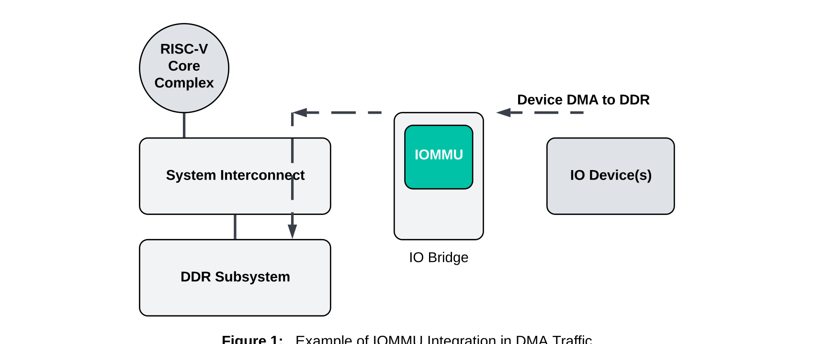
IOMMU 通常集成在 IO bridge 或 shell 中以满足 SoC 需求； inbound 事务（设备到内存）由 IOMMU 处理，outbound 事务（CPU 到设备）已经是物理地址，不由 IOMMU 管理。
IOMMU 要区分不同 IO 设备以选择正确的翻译规则。入站请求除了地址、读写属性外，还携带一个硬件上下文标识符（HardContextID，HCID），它由 DeviceID（设备硬件标识）和可选的 ProcessID（进程上下文，对应 PCIe 的 PASID — Process Address Space ID）组成。软件侧再通过 PSCID（Process-stage Context ID，first-stage 地址空间标签）/ GSCID（Guest-stage Context ID，G-stage / VM 标签）这两类"软件上下文标识"（统称 SCID — Software Context ID，类似 CPU 的 ASID — Address Space ID）来区分不同的地址空间与 VM。
IOMMU（Input/Output Memory Management Unit）是介于 IO 设备与系统内存之间的硬件单元，对 DMA 进行地址翻译和访问控制。
1.2 三大动机
OS 保护
设备不能随意读写内核或用户态内存。IOMMU 通过页表限制每个设备能访问的物理页。
32-bit 设备访问 64-bit 内存
老设备只有 32-bit 地址线，IOMMU 把它看到的小 IOVA 映射到 64-bit 物理内存任意位置。
设备虚拟化 / 直通
VM 里的设备直通（VFIO（Virtual Function I/O，Linux 用户态设备直通框架））需要把设备的 DMA 地址翻译进 VM 的物理内存，IOMMU 提供 G-stage（Guest-stage，客户机阶段翻译）/ 嵌套翻译。
1) OS 保护：从"总线主设备"的威胁说起
现代 SoC 中，几乎所有高速外设（网卡、GPU、NVMe、USB 控制器）都是 bus master（总线主设备，即可主动发起 DMA 的设备），可以直接向内存控制器发起读写，无需 CPU 介入。这意味着：
- 一个被攻破的网卡驱动或恶意 PCIe 设备，理论上可以读写整个系统物理内存；
- 用户态驱动（如 DPDK、VFIO）把设备交给应用后，必须防止应用越界访问其他进程的 DMA buffer；
- 多租户场景下，不同租户的设备不能互相看到对方的内存。
IOMMU 的解决方案：给每个设备（或每个 PASID（Process Address Space ID，进程地址空间标识，见导读核心概念预览））一份独立的页表。设备看到的 IOVA 只是它自己的虚拟地址空间，IOMMU 把它翻译成被授权访问的物理页集合。这与 CPU MMU 把用户 VA 限制到进程物理页的道理完全相同，只是翻译触发源从 CPU 变成了 DMA。
RISC-V PMP（Physical Memory Protection）和早期 SoC 的"保护窗"只能按固定粗粒度区间隔离，且通常是全局的。IOMMU 的优势是按设备、按页、动态：一个设备可以被允许访问 0x10000000~0x10000fff，而另一个设备完全看不到这段内存。
2) 32-bit 设备访问 64-bit 内存：IOVA 的由来
很多 legacy 设备（尤其是旧网卡、SATA 控制器、嵌入式 DMA 引擎）只支持 32-bit 地址总线。当系统内存超过 4 GB 时，这些设备无法直接寻址高区内存。传统做法有两种：
- bounce buffer（SWIOTLB（Software I/O TLB，软件 IOMMU））：在低于 4 GB 的区域预留一块内存，DMA 先把数据写到 bounce buffer（反弹缓冲区），再由 CPU 复制到真实 buffer。代价是两次拷贝和额外延迟。
- IOMMU 映射：让设备继续使用 32-bit IOVA（例如 0x00000000~0xffffffff），IOMMU 把该 IOVA 映射到任意 64-bit SPA。设备无感知，CPU 也无需拷贝。
在 RISC-V IOMMU 中，这对应 DC.fsc（Device Context 的 First-Stage Context 字段，详见第 3 章）指向的 first-stage 页表：IOVA 就是设备的虚拟地址，PPN（Physical Page Number，物理页号）可以是高区物理页。对于大内存服务器，这是支持 legacy 设备的唯一高性能方案。
设备的地址空间与进程地址空间通常是独立的：一个网卡可能同时被多个进程通过 VFIO 使用，或者一个进程给设备分配的 DMA buffer 并不想暴露整个进程地址空间。IOMMU 允许为设备单独构造一份最小权限的页表，而不是复用 CPU 进程的 satp。
3) 设备虚拟化：直通与嵌套翻译
虚拟化中，VM 里的设备直通（PCIe passthrough / SR-IOV（Single Root I/O Virtualization，单根 I/O 虚拟化）VF（Virtual Function，虚拟功能））要求设备发出的 DMA 地址是 VM 视角的 GPA（Guest Physical Address，客户物理地址），而 host 需要把它映射到真实的 SPA（System Physical Address，系统物理地址）。没有 IOMMU 时，hypervisor 只能：
- 在 VM 启动时把整段 GPA 静态映射到 SPA，然后伪直通给设备——这牺牲了内存超售和迁移能力；
- 或者完全软件模拟设备 DMA——性能极差。
嵌套翻译让设备看到 VM 内部的 GVA/GPA，硬件自动完成 GVA→GPA→SPA 的两级 walk。这样 hypervisor 只需要维护 G-stage 页表（GPA→SPA），guest OS 维护 first-stage 页表（GVA→GPA），IOMMU 把两者组合起来。VM 迁移时，hypervisor 修改 G-stage 映射即可，无需改动设备配置。
如果由软件把 GVA 预先翻译成 SPA 再交给设备，那么 guest OS 每次修改 first-stage 页表都需要 trap 到 hypervisor，性能无法接受。IOMMU 的 two-stage walk 让 guest OS 能直接管理自己的页表，hypervisor 只负责 GPA→SPA 映射。
1.3 系统接口与 PDS
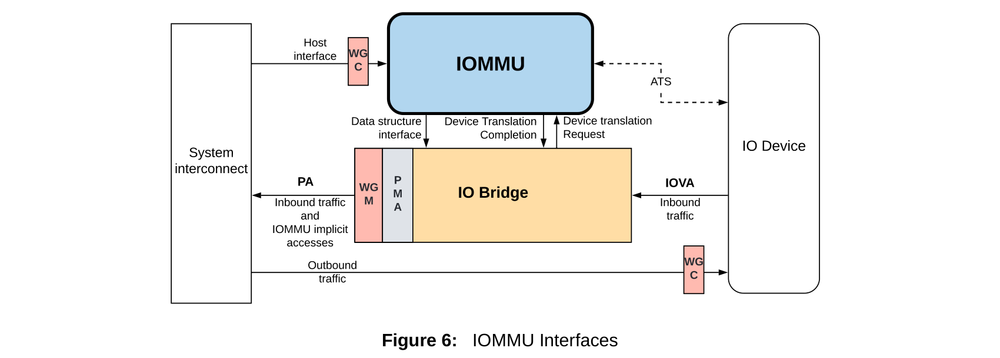
Figure 6 共展示五个接口，此处摘录其中三个关键接口的细节，Host Interface 与 ATS Interface 见下文列表。
Device Translation Request Interface：IOMMU 的 slave 接口，接收来自一个或多个 IO 设备的虚拟地址请求。请求会携带设备地址、事务标识符以及 HCID，IOMMU 不接收设备事务的数据本身。
Device Translation Completion Interface：IOMMU 的 master 接口，返回翻译后的物理地址和错误状态。由于 IOMMU 可能不按顺序响应请求，该接口也会回传事务标识符。
PDS Interface（IOMMU Data Structure Interface）：IOMMU 作为 master 访问系统内存中的 DDT、页表、队列等数据结构。"PDS" 是 SiFive 实现中的端口命名（手册未给出全称展开），规范层面统称 Data Structure Interface。
按照 SiFive IOMMU-22 手册（§2.1）和 RISC-V IOMMU 规范的命名，IOMMU 与系统交互共有 五个接口，按 master/slave 性质可分为两类：
- Device Translation Request Interface（slave）：接收一个或多个 IO 设备发来的虚拟地址翻译请求。请求除携带设备地址与事务标识符外，还附带 HardContextID（HCID） 用于标识来源设备及进程。注意 IOMMU 只接收翻译请求本身，不接收 DMA 数据载荷——数据仍走原本的总线路径。
- Device Translation Completion Interface（master）：把翻译后的物理地址与错误状态返回给发起请求的设备。由于 IOMMU 可乱序响应，completion 会回传原事务标识符以便设备匹配；可选地附带翻译后事务的权限位。
- Host Interface（slave）：供 hart（CPU 核）通过 MMIO（Memory-Mapped I/O，内存映射 I/O）访问 IOMMU 内部寄存器，进行全局配置与维护（如读写 DDTP/CQB/FQB 等寄存器、注入命令、收取 fault record）。这些寄存器的全称见第 6 章：DDTP = Device Directory Table Pointer、CQB = Command Queue Base、FQB = Fault Queue Base。
- PDS Interface（master，即 IOMMU Data Structure Interface）：IOMMU 作为 master 通过系统互连访问内存中的数据结构，包括 DDT（Device Directory Table，设备目录表）/ PDT（Process Directory Table，进程目录表）上下文条目、First/Second-stage 页表、命令/故障/页请求队列的环形缓冲。Page Table Walker（PTW）也通过此接口逐级读页表。SiFive 实现中，PDS 端口不产生 WRAP 或 FIXED 突发，且 AXI 事务不跨越 64 B 边界。软件只需保证这些结构所在内存在 IOMMU 视角可访问。
- ATS Interface：与 PCIe Root Port 通信，使用 AMBA DTI（Distributed Translation Interface）协议承载 ATS（Address Translation Services，PCIe 地址翻译服务）消息。用于：响应设备的 ATS Translation Request；向 endpoint 的 ATC（Address Translation Cache，地址翻译缓存）发起失效（Invalidate Request）；通过 PCIe Page Request Interface（PRI，页请求接口）机制为设备请求尚未映射的页。
把五个接口按方向归类，能更直观地理解 IOMMU 在系统中的角色：
- IOMMU 作为 slave（被动接收）：Device Translation Request Interface（接收设备请求）、Host Interface（接收 CPU MMIO 访问）。
- IOMMU 作为 master（主动发起）：Device Translation Completion Interface（向设备回送翻译结果）、PDS Interface（向系统内存读数据结构）、ATS Interface（向 Root Port 发 ATS/PRI 消息）。
设备请求带两个关键标识：
- DeviceID：标识发起请求的设备（PCIe 中通常由 RID（Requester ID，请求者标识）/ BDF（Bus/Device/Function，PCIe 总线/设备/功能号）映射）。
- ProcessID：可选，标识设备内的进程（PCIe PASID）。
- 两者合称 HCID（HardContextID）= {DeviceID, ProcessID}。
1.4 集成示例
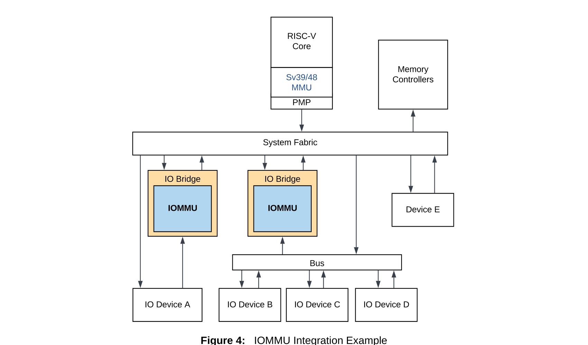
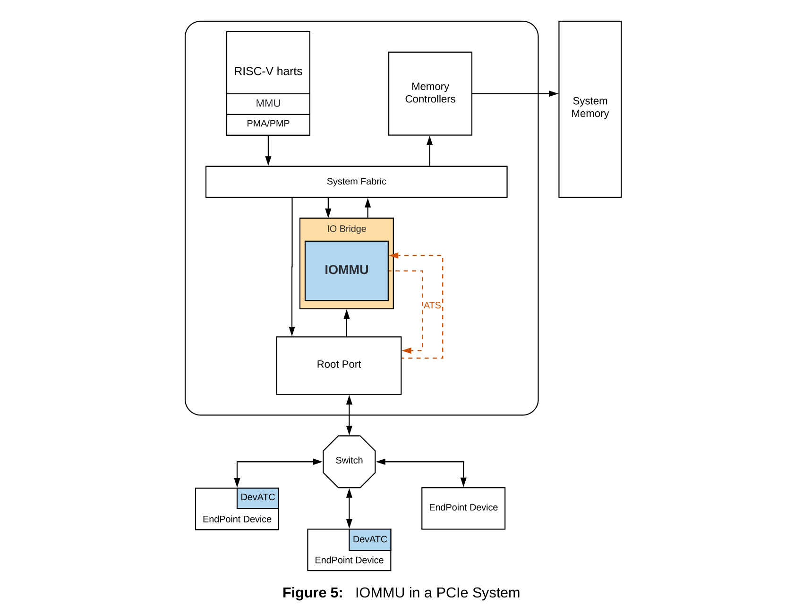
Figure 4：hart 上的设备驱动配置 IO 设备的 DMA 引擎；设备使用 VA/GVA/GPA 或其他总线地址发起 DMA，IOMMU 负责翻译成 PA。host 接口是软件运行 hart 上配置/维护翻译表与保护表的编程接口；IOMMU 的页表遍历器通过 PDS master port 访问系统内存。
Figure 5：在该 SoC 中，IOMMU 把每个 endpoint 的虚拟地址翻译成物理地址，同时还能把 MSI/MSI-X 地址翻译成翻译表指向的位置（即 IOMMU 把 MSI 当作普通入站事务处理）。每个 endpoint function 必须有唯一的 HardContextID，IOMMU 才能选择正确的翻译规则。
Note：一个 SoC 可以让多个 PCIe Controller 共享单个 IOMMU 实例，但要求每个 endpoint 的 HCID 唯一，例如用 HCID 的高位表示 Root Segment ID。
SiFive IOMMU-22 既可以作为 SoC 内置单元（platform 设备），也可以作为 PCIe 端点设备出现。SG2046 采用前一种：一个高性能 IOMMU 管理片上外设，多个 PCIe 子系统各带一个 IOMMU。
1.5 IOMMU 与 CPU MMU 的对比
把 IOMMU 比作"设备端的 MMU"虽然直观，但两者在实现细节和使用方式上有显著差异。理解这些差异，是学习后续寄存器与数据结构的前提。
下表涉及若干 CPU 侧与 IOMMU 侧的缩写，先集中说明（详见导读"核心概念预览"）：satp（Supervisor Address Translation and Protection）= CPU OS 页表基址寄存器；hgatp（Hypervisor Guest ATP）= CPU G-stage 页表基址；vsatp（Virtual Supervisor ATP）= guest OS 页表基址。ASID（Address Space ID）= CPU 地址空间标识；PSCID / GSCID = IOMMU 的 first-stage / G-stage 标签（对应 CPU 的 ASID / VMID）。IODIR（I/O Directory invalidation）= DDT/PDT 目录缓存失效命令；IOTINVAL（IOTLB Invalidation）= IOTLB 失效命令。
| 维度 | CPU MMU | IOMMU |
|---|---|---|
| 翻译触发源 | CPU 取指 / 读写 | 外设 DMA、ATS 请求、PCIe message |
| 页表基址 | satp（每个 hart / 进程） | DDTP → DC.fsc / PC.fsc（每个设备 / PASID） |
| 上下文切换 | 由操作系统切换 satp / ASID | 由软件更新 DDT/PDT / 发 IODIR 命令失效缓存 |
| 地址空间标识 | ASID（ Sv39/Sv48 中 16 bit） | PSCID（20 bit，对应 first-stage）+ GSCID（16 bit，对应 G-stage） |
| 缺页处理 | 触发 CPU page fault，由内核缺页中断处理 | 写 Fault Queue 或 Page Request Queue，由驱动 / 用户态处理 |
| 缓存失效 | SFENCE.VMA | IOTINVAL.VMA / GVMA、IODIR.INVAL_DDT/PDT |
| 虚拟化支持 | 两阶段翻译由 hgatp + vsatp 控制 | 两阶段翻译由 DC.iohgatp（IO Hypervisor Guest ATP，对应 CPU 的 hgatp）+ DC/PC.fsc 控制。 |
CPU 那边，每个 hart 只需要一个 satp CSR（虚拟化时再加一个 hgatp）就够用了——当前运行进程的页表基址写进 satp，调度器切换进程时直接覆写这个寄存器即可。寄存器数量极少，硬件成本可忽略，但切换必须快（每次调度都发生），所以靠 TLB + ASID 避免每次切换都把缓存冲掉。
IOMMU 面对的局面完全不同：它同时挂着几十甚至上百个设备（每个 PCIe endpoint、每个 SR-IOV VF 都是一个独立 DeviceID），每个设备还可能通过 PASID 关联多个进程（一台跑 SVA 的 GPU 可能有上千个 PASID）。如果把每个设备的页表基址、权限、ATS/PRI 配置都塞进 IOMMU 内部寄存器，IOMMU 就需要成百上千个寄存器，硬件成本和寻址都成问题。
因此 IOMMU 借鉴了 CPU 页表的思想：把上下文本身放进系统内存，IOMMU 内部只保留一个根指针寄存器 DDTP（指向 DDT 根表）。每个设备的上下文（Device Context，DC，32 或 64 字节）作为 DDT 的叶节点存在内存里，IOMMU 在收到 DMA 请求时按 DeviceID 多级查找（1LVL/2LVL/3LVL）取出对应 DC；PASID 进程上下文（Process Context，PC）则通过 DC.fsc 指向的 PDT 进一步查找。这样上下文数量只受系统内存限制，可扩展到上万个设备/进程，而 IOMMU 硬件只需要一个寄存器就能定位所有上下文。代价是每次首次访问需要 walk DDT/PDT，所以 IOMMU 内部也有 DC cache 缓存最近用过的上下文条目。
1.6 三大动机的技术本质
第 1.2 节把 IOMMU 的价值概括为“OS 保护、32-bit 设备访问 64-bit 内存、设备虚拟化”。下面从系统设计的角度，解释这三种场景为什么必须引入 IOMMU，而不是用其他更便宜的方法替代。
1) OS 保护：为什么不能用总线隔离或 fixed 映射？
早期 SoC 可以用内存控制器中的“保护窗”或 TrustZone 把设备限制在某个物理区间内。但这类方案有两个缺陷：
- 粒度粗：通常只能按 1 MB 甚至更大的段划分，无法做到页级隔离。
- 不灵活：每次驱动分配/释放 DMA buffer 都要重新编程保护窗，容易出错。
IOMMU 把设备的可见范围交给页表，粒度是 4 KB，且可以随进程地址空间动态变化。这是支持容器、多租户、用户态驱动的关键。
2) 32-bit 设备访问 64-bit 内存：为什么不能用 SWIOTLB？
软件 IOMMU（SWIOTLB）在内存低区保留一段“反弹缓冲区”（bounce buffer），把设备 DMA 复制到这段区域，再映射到真实物理地址。它确实能解决问题，但代价是：
- 两次拷贝：发送和接收各一次，高带宽设备（网卡、NVMe）会严重损失性能。
- 容量受限：bounce buffer 大小固定，大数据包/大块 I/O 会失败或分片。
硬件 IOMMU 通过页表直接把 32-bit IOVA 映射到 64-bit SPA，设备无感知，CPU 也无需拷贝。
3) 设备虚拟化：为什么直通（passthrough）需要嵌套翻译？
在没有 IOMMU 的虚拟化方案里，设备 DMA 要么由 hypervisor 用软件模拟（性能差），要么把设备“独占”给某个 VM 并限制其只能访问该 VM 的物理内存（资源利用率低）。
IOMMU 的嵌套翻译让设备看到 VM 内部的 GVA/GPA，而 hypervisor 只维护 G-stage 页表把 GPA 映射到 SPA。这样：
- 设备可以像访问真实内存一样访问 VM 的地址空间；
- VM 迁移时只需复制 GPA→SPA 映射，无需修改设备配置；
- 同一物理设备通过 SR-IOV 切出的多个 VF 可以分别直通给不同 VM。
IOMMU 并非免费。它增加了 DMA 路径的延迟（TLB 查找 / PTW），消耗内存带宽（读取 DDT/PDT/页表），并带来软件复杂度（失效同步、故障处理）。因此小资源 MCU 通常不设 IOMMU；只有需要强隔离、大内存、虚拟化的系统才会引入。
1.7 能力边界与性能代价
IOMMU 能做很多事，但也有明确边界。初学者常误以为 IOMMU 可以：
- “防止设备被黑客入侵”：IOMMU 限制设备能访问的内存，但不能阻止设备本身被篡改后发起合法但恶意的 DMA。
- “替代内存加密 / TrustZone”：IOMMU 不做机密性保护，只控制地址映射与权限。
- “自动管理设备内存一致性”：DMA 一致性由 CPU 缓存策略、设备 snooping 能力决定，IOMMU 只负责地址翻译。
性能方面，主要关注点有三：
- TLB 命中 vs. PTW：频繁访问的 IOVA 会被 IOTLB 缓存；冷地址会触发页表遍历，增加数十到数百纳秒延迟。
- 页表级数：Sv48 比 Sv39 多一级页表，PTW 多一次内存访问；但 Sv39 只能覆盖 512 GB 虚拟地址，需要映射更大地址范围的设备（如 GPU、大内存服务器的 NVMe）可能要 Sv48。
- 失效开销：每次
dma_map/unmap或进程切换都要发IOTINVAL+IOFENCE.C，高 IOPS 场景下这是主要开销来源。
该实现强调“高性能 IOMMU”定位：支持大容量 IOTLB、最多 31 个 HPM 事件计数器、可选 ATS。设计目标是在需要强隔离的同时，尽量降低对 DMA 带宽和延迟的影响。
第 2 章地址空间与翻译模式
2.1 单级翻译
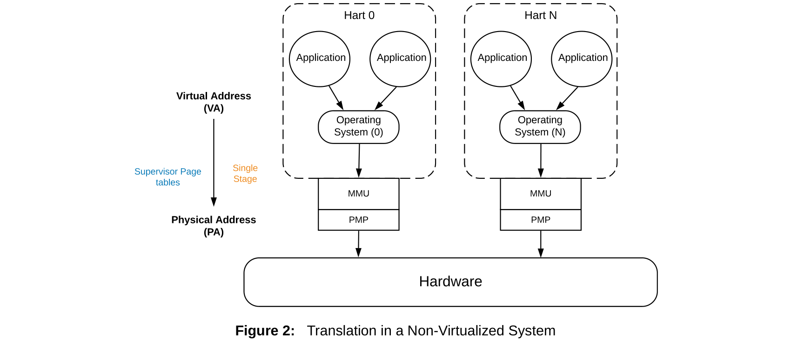
IOMMU 支持单级翻译：原始虚拟地址 VA（或 Supervisor Virtual Address）通过 First-stage Supervisor Page tables 转换成 System Physical Address（或 Supervisor Physical Address），本文档统称 VA 和 PA。
IOMMU 也支持两级翻译：Guest Virtual Address（GVA）先经 Virtual Supervisor Page tables 转成 Guest Physical Address（GPA），再经 Hypervisor Guest Page tables 转成 System Physical Address（SPA）。因此规范中可能同时出现 VA、GVA、GPA、SPA 四种地址术语，注意区分层次。
SiFive IOMMU-22 限制：该实现不支持单级 MSI page tables、memory resident interrupt file（MRIF）和 atomic operations，相关功能需通过 G-stage 页表或软件模拟实现。
单级翻译中，IOMMU 使用 First-stage 页表（由 DC.fsc 指向，格式同 CPU satp）：
IOVA --(DC.fsc / IOSATP)--> SPA页表格式与 CPU 完全相同
RISC-V IOMMU 的 first-stage 页表直接复用 CPU 的 Sv39/Sv48/Sv57 格式。以 Sv39 为例：
- 虚拟地址 39 bit，被切成 VPN[2]、VPN[1]、VPN[0] 三段，每段 9 bit，对应三级页表索引。
- 每级页表 4 KB，含 512 个 64-bit PTE。
- PTE 的 PPN 字段、权限位（V/R/W/X/U/G/A/D）、PBMT（Page-Based Memory Type，页表项中的内存类型位）解释与 CPU 页表一致。
这意味着，理论上可以复用 CPU 的页表构建代码；但运行时 IOMMU 独立维护 IOTLB，不会自动感知 CPU TLB 的失效。因此软件必须在修改页表后显式发送 IOTINVAL.VMA。
既然 first-stage 页表格式与 CPU 完全相同（都是 Sv39/Sv48/Sv57），为什么不直接让 IOMMU 跟着 satp 走、复用当前进程的页表？主要有四点原因：
- 最小权限原则。CPU 进程的页表覆盖整个用户虚拟地址空间（Sv39 下可达 512 GB），里面包含代码段、栈、堆、共享库等所有映射。但 DMA 实际只需要访问其中一小块 buffer——典型情况是几个 MB 到几十 MB。如果让设备直接走 CPU 页表，等于把整个进程内存都暴露给设备，任何被攻破的固件都能 DMA 读走密码、密钥。IOMMU 用一份独立的、只包含 buffer 映射的页表，把设备可见范围收窄到必要大小，这是 IOMMU 作为安全边界的核心价值。
- 一个进程同时给多个设备服务。同一段 buffer 可能给网卡 RX、GPU 计算、加密加速器三个设备，每个设备需要的权限不同（网卡要 R/W，GPU 要 R/W/X 给 unified shader，加密卡只要 W）。CPU 进程只有一份页表，无法对每个设备单独授权；IOMMU 给每个 DeviceID 维护独立的 DC 和 first-stage 页表，可以按设备定制权限。
- 没有"当前进程"概念。CPU 那边 hart 在任一时刻只跑一个进程，
satp指向当前进程；调度器切进程时改satp。IOMMU 同时挂着多个设备，可能分别属于不同进程（比如一张 GPU 同时被容器 A 和容器 B 共享），不存在"当前进程"可言。所以 IOMMU 必须按 DeviceID/PASID 各自带一份页表，由 DC.fsc / PC.fsc 分别指向。 - 失效同步成本高。CPU 改页表后发
SFENCE.VMA只能失效本 hart 的 TLB，IOMMU 的 IOTLB 是独立硬件结构，看不到这个信号。如果共用一份页表，CPU 修改后还得想办法通知 IOMMU 失效对应 IOTLB 项；与其共用，不如让 IOMMU 维护自己的页表实例，由驱动显式调用IOTINVAL.VMA控制失效粒度。
例外：SVA（Shared Virtual Addressing）场景。当确实需要让设备和 CPU 进程共享同一份虚拟地址视图时（比如 GPU unified memory），RISC-V IOMMU 允许把 DC/PC 的 fsc 直接指向进程页表，真的共用同一份页表。此时驱动必须用 MMU_NOTIFIER 监听 CPU 页表变化，再发 IOTINVAL.VMA 同步给 IOMMU。这是性能与一致性复杂度的权衡，是 SVA 这种特定模式，不是默认做法。
2.2 两阶段 / 嵌套翻译
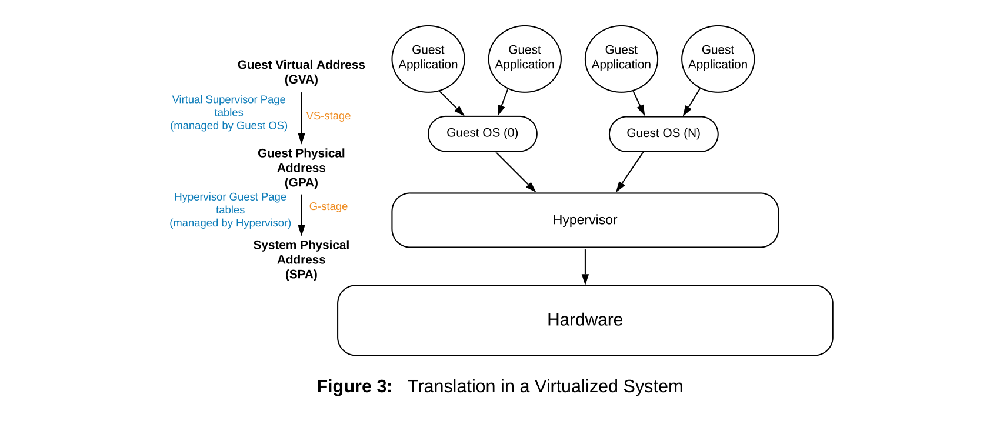
虚拟化直通场景中，设备看到的是 VM 内的 GVA：
- VS-stage（First-stage）：GVA -> GPA，页表由
DC.fsc或PC.fsc指向。 - G-stage：GPA -> SPA，页表由
DC.iohgatp指向，格式为 Sv39x4/Sv48x4（根页表 16KB）。
为什么 G-stage 根页表是 16 KB？
CPU 的两阶段翻译中，G-stage 把 GPA 翻译成 SPA。为支持大内存 VM（>512 GB GPA）又不想引入 Sv48x4 的四级 walk，规范把 Sv39 的根表扩大 4 倍：根索引由 9 bit 扩为 11 bit，相应 GPA 宽度由 39 bit 扩为 41 bit（覆盖 2 TB），而 walk 仍保持 3 级。这就是 "Sv39x4" 的由来——根表大小是普通 Sv39 的 4 倍。
- Sv39 的根索引是 9 bit，对应 512 项 × 8 bytes = 4 KB 根页表，覆盖 39 bit GPA（512 GB）。
- Sv39x4 的根索引是 11 bit，对应 2048 项 × 8 bytes = 16 KB 根页表，覆盖 41 bit GPA（2 TB）。
- 中间级仍然是 4 KB（因为额外的 2 bit 全部用在根级）。
因此，DC.iohgatp.PPN 指向的 G-stage 根页表必须 16 KB 对齐，而 DC.fsc.PPN 指向的 first-stage 根页表只需 4 KB 对齐。
Linux RISC-V KVM 在为 VM 分配 G-stage 页表时，会分配 16 KB 对齐的页面作为根页表；而 IOMMU 驱动为 domain 分配 first-stage 页表时只分配 4 KB。这个差异在 riscv_iommu_alloc_paging_domain() 和 KVM 的 pgd 分配代码中分别体现。
2.3 翻译模式组合与决策树
| DC.iohgatp.MODE | DC.fsc / PC.fsc | 结果 | 典型场景 |
|---|---|---|---|
| BARE | 无效 / V=0 | OFF，事务被拒绝或 bypass | 未初始化 |
| BARE | Sv39/Sv48 + V=1 | First-stage only | 容器 / 进程隔离 |
| Sv39x4/Sv48x4 | BARE | G-stage only | VM 直通（IOVA=GPA） |
| Sv39x4/Sv48x4 | Sv39/Sv48 + V=1 | Nested（GVA->GPA->SPA） | 带 PASID 的 VM 设备 |
如何选择翻译模式？
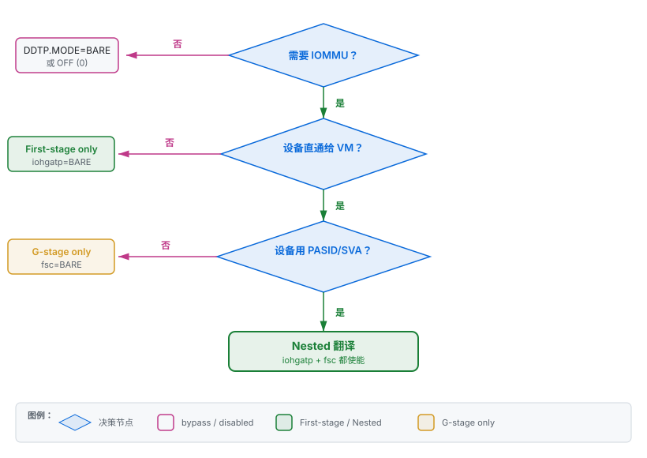
各模式软件职责
三种翻译模式下，"软件"由不同角色承担，各自维护的页表、负责的操作也不同。下表对照说明：
| 维度 | First-stage only | G-stage only | Nested |
|---|---|---|---|
| 页表维护者 | Host 内核的 IOMMU 框架（如 iommu_map/unmap） | Hypervisor（KVM 等） | Guest OS 维护 first-stage（GVA→GPA）；Hypervisor 维护 G-stage（GPA→SPA） |
| 页表内容 | IOVA → SPA | GPA → SPA（iohgatp 指向） | first-stage：GVA→GPA（fsc 指向）；G-stage：GPA→SPA |
| 设备使用的地址 | IOVA（内核分配，与进程虚拟地址无关） | GPA（guest 物理地址，设备直接产生） | GVA（guest 虚拟地址，需带 PASID） |
| 谁配置 DC | Host 内核驱动（riscv_iommu_set_dc） | Hypervisor 通过 ioctl 指示内核配置 iohgatp | Hypervisor 配置 iohgatp，guest 通过 MMU_NOTIFIER/ioctl 让 hypervisor 同步 fsc |
| IOTLB 失效发起方 | Host 内核（IOTINVAL.VMA） | Hypervisor（IOTINVAL.GVMA） | guest 发 HFENCE→hypervisor 转发为 IOTINVAL.VMA；hypervisor 自己改 G-stage 时发 IOTINVAL.GVMA |
| 典型场景 | 容器隔离、SVA（共享进程地址空间） | VM 设备直通（device assignment，无 PASID） | 带 PASID 的 VM 设备、SVA + 虚拟化 |
| Hypervisor 是否参与 | 否 | 是 | 是（且需要 guest 配合） |
三种模式的根本差异在于"页表由谁建、地址从哪来"：
- First-stage only是"Host 内核独力承担"：设备驱动调
dma_map把 IOVA 映射到 SPA，IOMMU 框架自动建 first-stage 页表。Hypervisor 完全不参与，适合无虚拟化的容器/裸金属场景。 - G-stage only是"Guest 用物理地址，Hypervisor 兜底"：设备直接产生 GPA（比如 VM 内驱动看到的就是物理地址），IOMMU 用 G-stage 把 GPA 翻译成 SPA。Guest 不需要知道 IOMMU 存在，但 Hypervisor 必须为 VM 准备好 G-stage 页表——这与 CPU 侧 hypervisor 为 VM 准备
hgatp是一回事。 - Nested是"两级都活，Guest 和 Hypervisor 各管一级"：Guest OS 像在裸机上一样维护自己的页表（GVA→GPA），Hypervisor 维护 G-stage（GPA→SPA）。IOMMU 硬件自动完成两级 walk，对 Guest 透明。这种模式需要设备支持 PASID 才能传 GVA，常用于 SVA + 虚拟化组合。
对应到内核代码：riscv_iommu_set_dc() 会根据 domain 类型（paging / nested / identity）填充 DC.iohgatp 和 DC.fsc 的不同组合，正是上表三种模式的具体落地。
该实现支持 Sv39/Sv48 以及对应的 X4 变体；不支持 Sv32/Sv57、MRIF 模式、MSI flat page table（MSI_FLAT=0），也不支持硬件自动更新 A/D 位（AMO_HWAD=0）。因此 Linux 驱动在 map_pages() 中会把 PTE 的 D 位预置 1，避免 DMA 写触发页表 fault。
第 3 章核心数据结构
3.1 上下文表总览
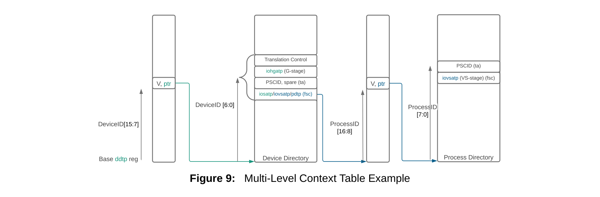
Device Directory 可以是单级（DeviceID ≤ 7 bit）、两级（DeviceID ≤ 16 bit）或三级（DeviceID ≤ 24 bit），级数由 DDIWidth（即 CAPABILITIES.DDI_WIDTH）决定。当设备支持 PASID 时，Process Directory 再按 ProcessID 切分索引。
所有翻译配置都存放在内存中，硬件通过 DDTP（Device Directory Table Pointer，设备目录表指针寄存器）找到 DDT 根，再按 DeviceID 查 DC（Device Context，设备上下文）；若启用 PASID（Process Address Space ID，PCIe 进程地址空间标识），则按 ProcessID 继续查 PDT（Process Directory Table）找到 PC（Process Context，进程上下文）。
3.2 DDT 与 DDI
多级 DDT 的索引位段称为 DDI（Device Directory Index，设备目录索引），DDI[0]/DDI[1]/DDI[2] 分别是 DeviceID 从低位到高位切出的索引段，对应 1/2/3 级 DDT 的各级表下标。每个 DDT 表项称为 DDTE（DDT Entry），非叶 DDTE 含 V（有效位）+ PPN（下一级表物理页号），叶 DDTE 即 DC（详见 3.3 节）。
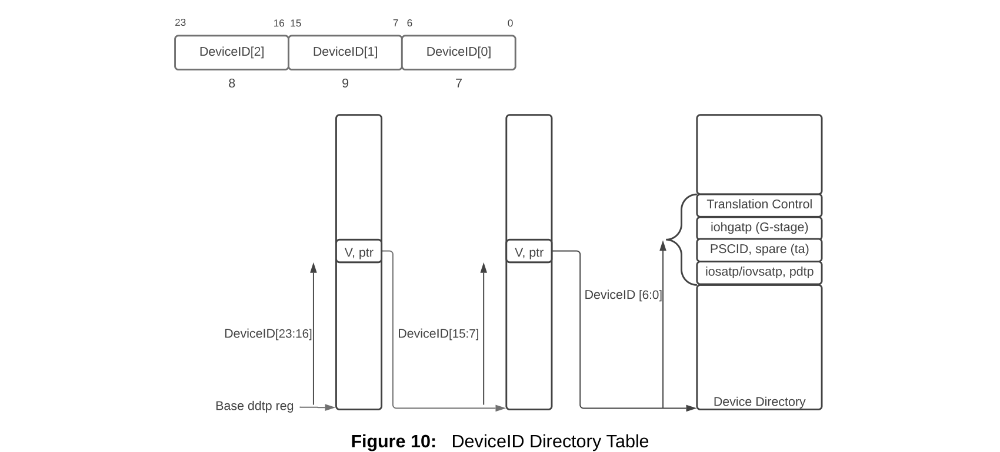
DeviceID 的位宽决定 DDT 级数：7 bit 及以下用单级，16 bit 及以下用两级，24 bit 及以下用三级。图中还展示了 DeviceID 如何被切分成 DeviceID[2]/[1]/[0] 三段，分别作为三级目录的索引。
Process Directory Table 不一定存在：只有设备支持 PASID 时才需要。ProcessID ≤ 8 bit 用单级 PDT，≤ 17 bit 用两级，≤ 20 bit 用三级。
以 2LVL、base format 为例：DDI[1] 占 9 bits 索引根表（512 项），DDI[0] 占 7 bits 索引叶表（128 项，因 base format DC 占 32 字节，4KB 页内 128 个）。两级合计索引 16 bit DeviceID。
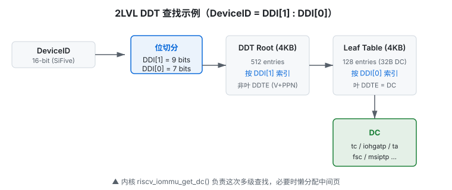
riscv_iommu_get_dc() 负责这次多级查找（懒分配中间页并定位 DC 虚拟地址）；DMA 运行时的同级 DDT 查找则由 IOMMU 硬件自动完成。3.3 Device Context
DC（Device Context，设备上下文）是 DDT 的叶节点，集中存放该设备的全部翻译配置——iohgatp 指向 G-stage 根页表，fsc 指向 first-stage 根页表（或 PDT），ta 提供 PSCID 等翻译属性，tc 是控制位字段。下面的表格逐字段展开。规范定义了两种内存布局：
- base format：4 × 64 bit（
tc/iohgatp/ta/fsc）。当CAPABILITIES.MSI_FLAT=0时使用；SiFive IOMMU-22 即此格式。 - extended format：8 × 64 bit，在 base 基础上增加
msiptp/msi_addr_mask/msi_addr_pattern/reserved，用于 MSI（Message Signaled Interrupt，消息信号中断）页表重映射。
内核用 struct riscv_iommu_dc 直接映射 extended 布局（8 word）；base format 下每个 DC 只占 4 word（32 字节），在同一 4 KB 页内按 32 字节步长密集排列（extended 则按 64 字节步长）。riscv_iommu_get_dc() 中的 (3 - base_format) 即用于按 2 或 3 的位移计算 DC 在页内的步长（base 时位移 2 = 32 字节，extended 时位移 3 = 64 字节）。
iommu-bits.h
struct riscv_iommu_dc {
u64 tc; /* Translation Control */
u64 iohgatp; /* G-stage ATP */
u64 ta; /* Translation Attributes, 含 PSCID 等 */
u64 fsc; /* First-Stage Context, 指向 first-stage 页表或 PDTP */
u64 msiptp; /* MSI page table pointer (extended only) */
u64 msi_addr_mask; /* extended only */
u64 msi_addr_pattern; /* extended only */
u64 _reserved; /* extended only */
};DC.tc 控制位
| 位 | 名称 | 含义 |
|---|---|---|
| 0 | V | DC 有效。V=0 时所有请求报 DDT_INVALID（cause 258）。 |
| 1 | EN_ATS | 允许该设备使用 PCIe ATS 转换请求。 |
| 2 | EN_PRI | 允许该设备使用 Page Request Interface；需同时配置 PQ。 |
| 3 | T2GPA | ATS 转换请求失败时返回 GPA 而非 SPA（嵌套虚拟化场景）。 |
| 4 | DTF | Device Trap Fault，遇到 fault 时是否触发中断/上报。 |
| 5 | PDTV | Process Directory Table Valid。1 = fsc 指向 PDT；0 = fsc 指向 First-stage 页表。 |
| 6 | PRPR | PRI 权限位处理方式。 |
| 7 | GADE | Guest-stage A/D（Accessed/Dirty，已访问/已修改）位由软件更新（0）或硬件 AMO（Atomic Memory Operation，原子内存操作）更新（1）。GADE = Guest-stage A/D Enable。 |
| 8 | SADE | Supervisor-stage A/D 位由软件更新（0）或硬件 AMO 更新（1）。SADE = Supervisor-stage A/D Enable。 |
| 9 | DPE | Default ProcessID Enable。仅 PDTV=1 时有意义：1 = 允许用 ProcessID=0 翻译无 PASID 的请求。 |
| 10 | SBE | First-stage 页表字节序：0 小端，1 大端。 |
| 11 | SXL | First-stage 地址模式：0 = Sv39/Sv48/Sv57，1 = Sv32。 |
| 63:12 | — | 保留，必须写 0。 |
DC.iohgatp / DC.fsc / DC.ta 字段
三个字段名的全称：iohgatp = IO Hypervisor Guest Address Translation and Protection（IOMMU 版的 hgatp，指向 G-stage 根页表）；fsc = First-Stage Context（指向 first-stage 根页表或 PDT，由 tc.PDTV 决定）；ta = Translation Attributes（含 PSCID 等属性）。下表给出各子字段的位域与含义：
| 字段 | 位域 | 说明 |
|---|---|---|
iohgatp.PPN | 43:0 | G-stage 根页表物理页号（16KB 对齐，Sv39x4/Sv48x4）。 |
iohgatp.GSCID | 59:44 | Guest-stage Context ID，用于区分不同 VM 的 G-stage 缓存。 |
iohgatp.MODE | 63:60 | 0=BARE, 8=Sv32x4/Sv39x4, 9=Sv48x4, 10=Sv57x4。 |
ta.PSCID | 31:12 | Process-stage Context ID，类似 CPU ASID，用于区分 first-stage 地址空间。 |
fsc.PPN | 43:0 | 当 PDTV=0 时为 first-stage 根页表 PPN；当 PDTV=1 时为 PDT 根页表 PPN。 |
fsc.MODE | 63:60 | PDTV=0 时：0=BARE, 8=Sv32/Sv39, 9=Sv48, 10=Sv57；PDTV=1 时：1=PD8, 2=PD17, 3=PD20。 |
riscv_iommu_probe_device() 在分配 DC 时不会置 V；真正 attach paging domain 时，riscv_iommu_iodir_update() 先把 tc.V 清 0、发 IODIR.INVAL_DDT 与 IOTINVAL.VMA 使旧缓存失效，再写 fsc / ta，最后置 tc.V=1。这避免了硬件读到中间态。
3.4 PDT 与 Process Context
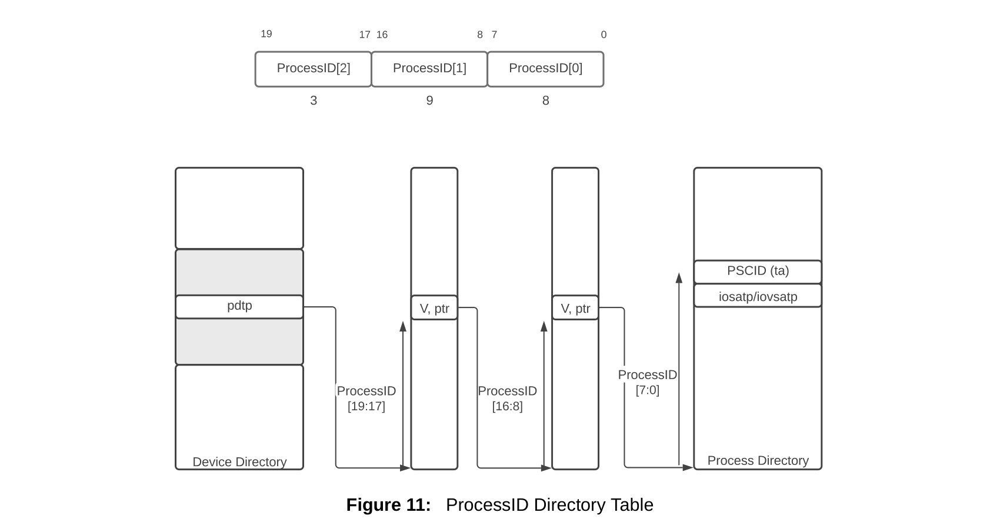
IOMMU 遍历 DDT 或 PDT 时，每一级都读取 DeviceID[N] 或 ProcessID[N] 指向的表项。非叶 DDTE / PDTE 的格式相同：
- V（bit 0）：表项有效。
- PPN（bits 53:10）：下一级表所在的物理页号（4KB 页）。
- 保留位：bits 9:1 和 63:54 保留为 0。
注意：非叶表项的 PPN 对 DDT 指向物理地址，对 PDT 可能指向物理地址或 Guest Physical Address（取决于实现）。
当 DC.tc.PDTV=1 时，DC.fsc 不再指向 First-stage 页表，而是指向 PDT（Process Directory Table）。ProcessID 按 PDI（Process Directory Index，进程目录索引，与 DDI 对称——DDI 切分 DeviceID 索引 DDT，PDI 切分 ProcessID 索引 PDT） 多级切分索引到 PC（Process Context），PC 中再含 fsc（IOSATP（IO Supervisor ATP，first-stage 页表指针格式））与 ta（含 PSCID（Process-stage Context ID）等翻译属性）。
iommu-bits.h
struct riscv_iommu_pc {
u64 ta; /* Translation Attributes */
u64 fsc; /* First stage context (IOSATP) */
};PC.ta / PC.fsc 字段
| 字段 | 位域 | 含义 |
|---|---|---|
ta.V | 0 | PC 有效位。与 DC.tc.V 同位置，因此 riscv_iommu_iodir_update() 可直接把 PC_TA_V 或到 dc.tc。 |
ta.ENS | 1 | 允许该 PASID 进行监督模式访问（S-mode）。 |
ta.SUM | 2 | 允许 user 页监督模式访问。 |
ta.PSCID | 31:12 | 该 PASID 对应的 PSCID。 |
fsc.PPN | 43:0 | First-stage 根页表 PPN。 |
fsc.MODE | 63:60 | 0=BARE, 8=Sv32/Sv39, 9=Sv48, 10=Sv57。 |
PDT 模式与能力
| PDT 模式 | fsc.MODE | ProcessID 位数 | 级数 | 能力位 |
|---|---|---|---|---|
| PD8 | 1 | 8 | 1 | CAPABILITIES.PD8 |
| PD17 | 2 | 17 | 2 | CAPABILITIES.PD17 |
| PD20 | 3 | 20 | 3 | CAPABILITIES.PD20 |
PDT 的索引切分与 DDT 类似：PD20 把 PASID 的低 9 bit 作为叶索引、中间 9 bit 作为中间索引、高 2 bit 作为根索引。具体位数由规范根据模式固定，软件只需按 fsc.MODE 分配对应大小的 PDT。
3.5 内核中的映射
整个 DDT 由 struct riscv_iommu_device 管理：
iommu.h
struct riscv_iommu_device {
struct iommu_device iommu;
struct device *dev;
void __iomem *reg; /* MMIO 基址 */
u64 caps;
u32 fctl;
unsigned int irqs[RISCV_IOMMU_INTR_COUNT];
unsigned int irqs_count;
unsigned int icvec;
struct riscv_iommu_queue cmdq, fltq;
unsigned int ddt_mode; /* 当前 DDTP.MODE */
dma_addr_t ddt_phys; /* DDT 根页物理地址 */
u64 *ddt_root; /* DDT 根页虚拟地址 */
};DDI 位宽与 riscv_iommu_get_dc()（配置阶段查表）
注意：本节描述的是内核软件在配置阶段根据 DeviceID 查找（必要时懒分配）DC 虚拟地址的过程。设备 DMA 运行时的同级 DDT→DC 查找由 IOMMU 硬件自动完成，两者只是表结构相同、位段切分规则相同，但执行主体和时机完全不同。
内核根据 ddt_mode 与 base_format 决定 DeviceID 切分：
| 级数 | base DDI[0]/DDI[1]/DDI[2] | extended DDI[0]/DDI[1]/DDI[2] |
|---|---|---|
| 1LVL | 低 7 bit | 低 6 bit |
| 2LVL | 7 / 9 bit | 6 / 9 bit |
| 3LVL | 7 / 9 / 8 bit | 6 / 9 / 9 bit |
下面代码展示了软件侧的懒分配过程：从 ddt_root 出发，遇到无效 DDTE 就分配 4KB 子页并用 cmpxchg 竞争填充，最后按 base/extended 偏移量定位到 DC 的虚拟地址——以便后续软件写入 fsc/iohgatp/tc.V 等配置字段。IOMMU 硬件在运行时执行同样的逐级查表逻辑，但只读不写，遇到 V=0 会直接报 fault，不会自动建表。
iommu.c (节选)
/* base format DDI bits: DDI[0]=bits 0-6, DDI[1]=bits 7-15, DDI[2]=bits 16-23 */
if (base_format) {
ddi_bits[0] = 7;
ddi_bits[1] = 7 + 9;
ddi_bits[2] = 7 + 9 + 8;
} else {
ddi_bits[0] = 6;
ddi_bits[1] = 6 + 9;
ddi_bits[2] = 6 + 9 + 9;
}
depth = iommu->ddt_mode - RISCV_IOMMU_DDTP_IOMMU_MODE_1LVL;
if (devid >= (1 << ddi_bits[depth]))
return NULL;
for (ddtp = iommu->ddt_root; depth-- > 0;) {
const int split = ddi_bits[depth];
ddtp += (devid >> split) & 0x1FF;
do {
ddt = READ_ONCE(*(unsigned long *)ddtp);
if (ddt & RISCV_IOMMU_DDTE_V) {
ddtp = __va(ppn_to_phys(ddt));
break;
}
ptr = riscv_iommu_get_pages(iommu, SZ_4K);
new = phys_to_ppn(__pa(ptr)) | RISCV_IOMMU_DDTE_V;
old = cmpxchg_relaxed((unsigned long *)ddtp, ddt, new);
if (old == ddt) { ddtp = ptr; break; }
riscv_iommu_free_pages(iommu, ptr);
} while (1);
}
/* 叶节点：base 4 words, extended 8 words */
ddtp += (devid & ((64 << base_format) - 1)) << (3 - base_format);
return (struct riscv_iommu_dc *)ddtp;cmpxchg？
多个 CPU 可能同时首次访问同一 DeviceID，都尝试分配子表。cmpxchg 保证只有一个成功，失败者释放自己申请的页面并重新读取已写入的 PPN，避免内存泄漏和重复初始化。
第 4 章DMA 请求处理流程
4.1 入站请求总览
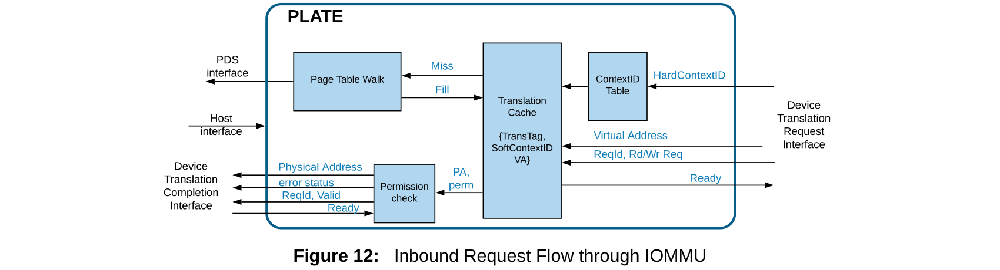
为避免每次入站事务都遍历页表，IOMMU 内部用 translation cache（IOTLB）缓存最近翻译结果，显著提升性能。TLB 命中时直接得到 PA 和权限规则，跳到权限检查步骤；未命中才启动 PTW。
重要 NOTE：IOMMU 硬件不更新 PTE 的 A/D 位；如果 A 或 D 位为 0，IOMMU 会报 page fault 或 guest page fault。因此 Linux 驱动在映射 DMA 页时通常会预置 A/D 位为 1。
一个设备请求到达 IOMMU 后：
- 提取 DeviceID（与可选 ProcessID）组成 HCID。
- 查 DDT（必要时查 PDT），得到 DC（与 PC）。
- 检查 DC.tc 权限（读/写/执行、ATS 使能等）。
- 查 IOTLB；命中则直接输出 SPA。
- 未命中则启动 PTW（Page Table Walker，页表遍历器），按 First-stage / G-stage / Nested 顺序查页表。
- 若失败，写 Fault Queue 并触发中断。
4.2 单级页表 walk
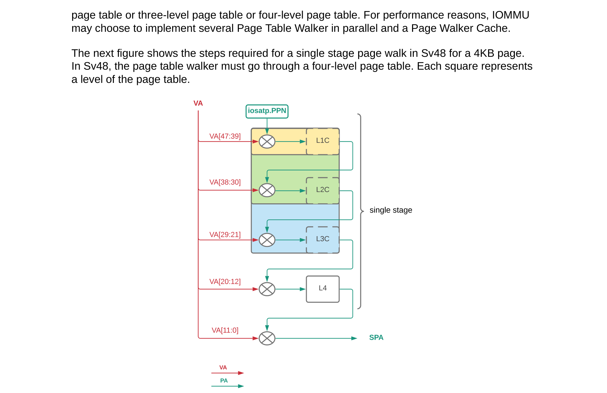
First-stage 页表格式与 CPU 的 Sv39/Sv48/Sv57 相同：IOMMU 使用 iosatp.PPN 和 iosatp.MODE 的页表方案。图为 Sv48 4KB 页的四级 walk：VA[47:39] → L1，VA[38:30] → L2，VA[29:21] → L3，VA[20:12] → L4，最终拼接出 SPA。
为提升性能，IOMMU 可实现多个并行的 Page Table Walker 和 Page Walker Cache（PWC），但软件仍要保证页表在内存中的一致性。
单级翻译与 CPU 的 Sv39/Sv48 完全一致：VPN（Virtual Page Number，虚拟页号）[2]/VPN[1]/VPN[0] 逐级查 PTE（Page Table Entry，页表项），最终得到 PPN。页表由 DC.fsc（IOSATP）指向。
4.3 嵌套页表 walk
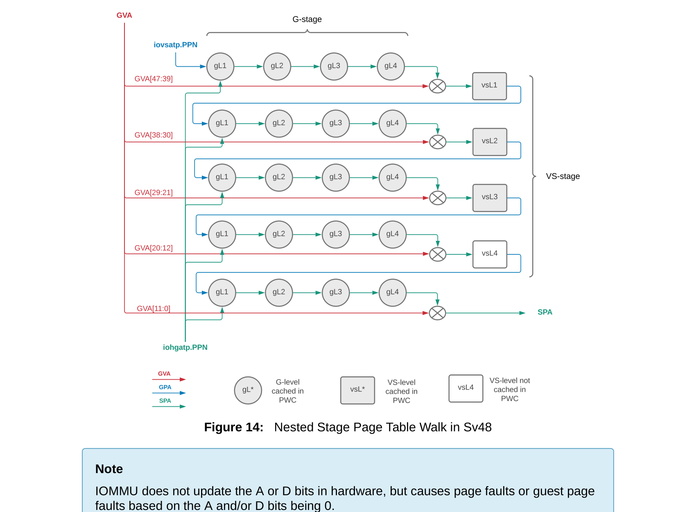
图为 Sv48 4KB 页的嵌套 walk：每个 VS-stage 的 GPA 输出都要再经 G-stage 翻译。圆角框表示被缓存在 PWC（Page Walker Cache）中的 G-stage 页表项；方框表示被缓存在 PWC 中的 VS-stage 页表项；虚线框表示未被缓存、需要从内存读取。
NOTE：与单级翻译相同，默认（SADE/GADE=0）IOMMU 不硬件更新 A/D 位，A/D 位为 0 会导致 page fault 或 guest page fault；若实现支持 AMO_HWAD 且软件置 SADE/GADE=1，IOMMU 会用 AMO 原子更新 A/D 位（详见 4.6 节）。SiFive IOMMU-22 因 AMO_HWAD=0，硬件始终不更新 A/D。
嵌套翻译先查 First-stage 得到 GPA，再用该 GPA 作为 G-stage 的输入查页表。两级页表可分别由 guest OS 和 host hypervisor 维护，IOMMU 硬件自动完成两级 walk。
4.4 一个网卡收包的完整例子
假设 VM1 有一块 PCIe 网卡直通。网卡驱动在 VM 内已经设置了接收描述符队列：描述符位于 VM 虚拟地址 0x40000000，指向的数据缓冲区位于 0x80000000。当网卡收到一个包时，它要 DMA 写往 0x80000000。
第 0 步：软件提前建立映射
在 VM 启动并直通网卡时，host 的 VFIO / IOMMU 驱动已经做了以下配置：
- 为网卡分配一个 domain（翻译域），设置
DC.iohgatp指向 VM 的 G-stage 页表（GPA→SPA）。 - 设置
DC.fsc指向 guest OS 的 first-stage 页表（GVA→GPA），即 VM 的进程页表；或设置为 BARE，如果网卡直接使用 GPA。 - 设置
DC.ta.PSCID以区分该 VM 的 first-stage 地址空间。 - 置
DC.tc.V=1，使该设备上下文生效。
第 1 步：网卡发起 DMA 写
网卡收到包后，向地址 0x80000000 发起 Untranslated write（TTYP=3）。该请求携带：
- DeviceID：网卡的 RID/BDF 映射，例如 0x6。
- ProcessID：如果网卡使用 PASID，则携带 PASID；否则 PV=0。
- IOVA / GVA：0x80000000。
- 事务类型：write/AMO。
第 2 步：IOMMU 查 DDT 得 DC
IOMMU 用 DeviceID 查 DDT，定位到网卡的 DC。检查 DC.tc.V=1，确认该设备已被 attach。若 V=0，直接生成 cause 258（DDT_INVALID）。
第 3 步：权限与事务类型检查
根据请求的 TTYP=3（write）核对 DC.tc：
- 写请求由 first-stage / G-stage 页表项的 W 位控制权限，
DC.tc本身不区分读/写权限位；执行类请求才检查 PTE 的 X 位。 - Untranslated write 不需要
EN_ATS。 - 如果
DC.tc.PDTV=1且请求带 PASID，继续查 PDT 得 PC；否则直接使用 DC 中的 first-stage 配置。DC.tc.DPE（bit 9）= Default Process_id Enable，仅当 PDTV=1 时有意义，表示允许用 0 作默认 process_id 翻译无 PASID 的请求，与执行权限无关。
第 4 步：IOTLB 查找
IOMMU 用 {DID, PID/PV, GSCID, PSCID, IOVA 页号} 查 IOTLB。若命中，直接得到 SPA 与写权限，跳过页表 walk。
第 5 步：First-stage walk（GVA→GPA）
若 IOTLB 未命中，启动 PTW。以 Sv39 first-stage 为例：
- 从
DC/PC.fsc.PPN取根页表物理地址。 - 用 IOVA[38:30] 作为 VPN[2] 索引根页表，读取 PTE。
- 若 PTE 是非叶节点，继续用 VPN[1]、VPN[0] 索引下一级。
- 最终得到叶 PTE，取出 PPN，组合成 GPA。假设 GPA = 0x120000000。
如果 first-stage 页表项缺失或权限不足，生成 cause 13/15（RD/WR_FAULT_S）。
第 6 步：G-stage walk（GPA→SPA）
拿到 GPA 后，IOMMU 继续用 DC.iohgatp 指向的 G-stage 页表做第二级 walk。Sv39x4 的根页表是 16 KB，用 GPA 的额外 2 bit 做根级索引：
- 从
DC.iohgatp.PPN取 16 KB 对齐的 G-stage 根页表。 - 用 GPA[40:30] 作为根索引（11 bit，对应 16KB 根页表中的 2048 个条目），读取 PTE。
- 继续中间级和叶级 walk，得到 SPA。假设 SPA = 0x640000000。
如果 G-stage 页表缺失或权限不足，生成 cause 21/23（RD/WR_FAULT_VS），iotval2 记录导致失败的 GPA。
第 7 步：更新 IOTLB 并完成 DMA
翻译成功后，IOMMU 把 {IOVA/GVA → SPA, 权限, DID, PSCID, GSCID} 写入 IOTLB。后续对同一页的访问直接命中。然后网卡的 DMA 写被转发到 SPA 0x640000000，数据真正写入 VM 的接收缓冲区。
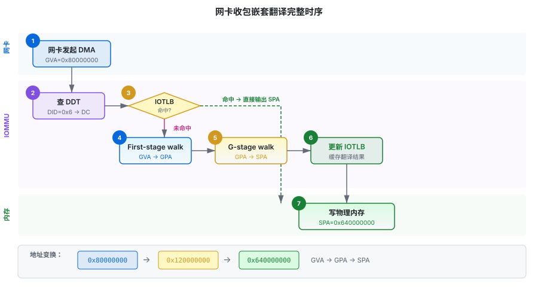
整个 walk 过程中，软件只在初始化时配置 DC.iohgatp、DC.fsc、DC.ta 并置 DC.tc.V=1。后续所有查表、权限检查、两级 walk 都由硬件完成，对 guest OS 和网卡驱动完全透明。这正是 IOMMU 虚拟化直通的价值所在。
4.5 请求处理状态机
图 4-1 给出了宏观流程，但硬件在处理每个请求时还要做大量分支判断。下面把一条请求从进入到最终输出（或 fault）的完整判断链展开，便于理解寄存器与数据结构的协同。
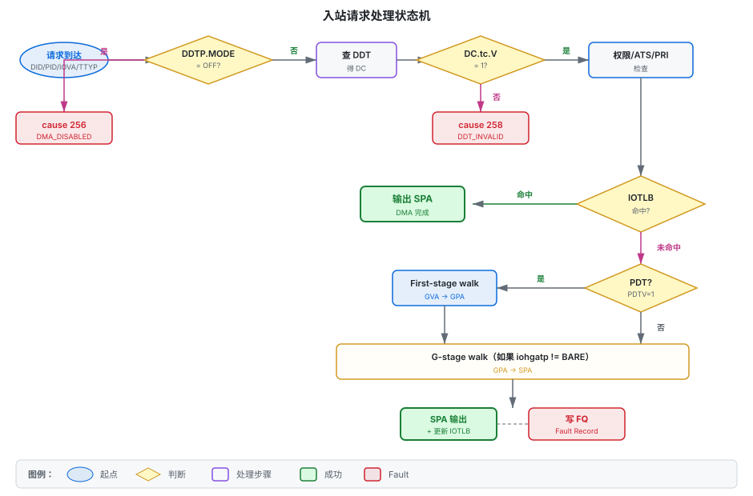
步骤详解
- DDTP.MODE 检查：若 MODE=OFF，所有入站请求直接生成 cause 256（DMA_DISABLED）；若 MODE=BARE，地址不做翻译直接透传（但仍有部分属性检查）。
- DDT 查找：按 DeviceID 切分 DDI，逐级读取 DDTE。任何一级读取失败生成 DDT_LOAD_FAULT（257）；遇到 V=0 的 DDTE 生成 DDT_INVALID（258）；DDTE 中 MODE/PPN 等字段非法生成 DDT_MISCONFIGURED（259）。
- DC 权限检查：根据事务类型（读/写/执行/ATS/PRI）核对
DC.tc中的EN_ATS、EN_PRI、DPE等位。不满足则生成 TTYP_BLOCKED（260）。 - PDT 查找（可选）：若
DC.tc.PDTV=1且请求带 PASID，则按 ProcessID 查 PDT。类似 DDT，可能生成 PDT_LOAD_FAULT（265）、PDT_INVALID（266）、PDT_MISCONFIGURED（267）。 - IOTLB 查找：用 {DID, PID, IOVA, GSCID, PSCID} 等标签查找。命中直接得 SPA + 权限。
- PTW：未命中则启动页表遍历。First-stage 用
DC/PC.fsc，G-stage 用DC.iohgatp。每级 PTE 读取失败、非法、权限不足都会生成对应 fault。 - 更新缓存：成功的翻译结果写入 IOTLB，供后续请求快速命中。
1~31 的 cause 对应"事务本身在总线或页表层面的 fault"（实际仅 1/4/5/6/7/12/13/15/20/21/23 有定义，32~255 保留），与 CPU page fault 编码对齐；256 以上对应"IOMMU 数据结构或内部状态错误"。这样驱动处理时可以快速区分：前者通常通知设备驱动或 VFIO（页表/权限问题）；后者通常是 DDT/PDT/页表配置错误，多数可通过修正配置解决（如 258 DDT_INVALID 表示设备未 attach，attach 即可），仅 *_CORRUPTED（268~271/274）与 INTERNAL_DP_ERROR（272）这类数据损坏才可能需要重置 IOMMU。
4.6 IOTLB 与 PTW 细节
IOTLB 的组织
IOTLB 是 IOMMU 内部的地址翻译缓存。与 CPU TLB 不同，它不仅要缓存 VPN→PPN 映射，还要缓存上下文信息，以便区分不同设备 / 不同 PASID 的同一 IOVA。典型标签包括：
- DID：DeviceID，区分设备。
- PID / PV：ProcessID 及其有效位，区分 PASID。
- GSCID / PSCID：区分 G-stage 和 first-stage 地址空间。
- IOVA 页号：通常按页大小索引。
- 权限位：读/写/执行。
SiFive IOMMU-22 支持大容量 IOTLB，并可通过 HPM 事件 TLB_MISS 监控命中率。
PTW 的内存访问
PTW 通过 PDS 接口读取页表。每级读取都是一次 64-bit 加载：
- First-stage 页表格式与 CPU Sv39/Sv48 完全相同，因此 PPN 字段、权限位（V/R/W/X/U/G/A/D）、PBMT 位的解释一致。
- G-stage 使用 Sv39x4/Sv48x4，根页表 16 KB，内部节点 4 KB。为什么根页表更大？因为 guest physical address 比 VA 宽 2 bit（支持更大的 GPA 空间），根级需要多 2 bit 索引。
- 若
DC.tc.SADE=1或GADE=1，IOMMU 会用 AMO 自动设置 PTE 的 A/D 位；否则 A/D 位由软件维护，IOMMU 只检查。
该实现 CAPABILITIES.AMO_HWAD=0，即不支持硬件自动更新 A/D 位。驱动在创建映射时会把 PTE 的 D 位预先置 1（见 riscv_iommu_map_pages() 中 _PAGE_DIRTY 的处理），避免每次 DMA 写都触发页表 fault。
4.7 Fault 生成条件
一条请求最终走向“成功翻译”还是“写 FQ（Fault Queue，故障队列）”，由一系列严格定义的条件决定。下表汇总了常见触发点：
| 阶段 | 触发条件 | Cause |
|---|---|---|
| DDTP.MODE=OFF | 任何入站事务 | 256 DMA_DISABLED |
| DDT 读取 | PDS 访问失败（如内存不存在） | 257 DDT_LOAD_FAULT |
| DDT 叶节点 | DC.tc.V=0 | 258 DDT_INVALID |
| DC 字段 | iohgatp.MODE 不被支持、fsc.MODE 与 PDTV 冲突等 | 259 DDT_MISCONFIGURED |
| 权限 | 写请求但 PTE 无 W 位、执行请求但 PTE 无 X 位等 | 12/13/15 或 260 |
| First-stage PTW | PTE 非法 / 权限不足 / 访问失败 | 12/13/15、274 |
| G-stage PTW | GPA→SPA 失败 | 20/21/23 |
| MSI 地址翻译 | MSI 页表读取/配置错误（若支持 MSI_FLAT） | 261~264 |
看到 cause 258 首先检查设备是否已 attach 到 domain（DC.tc.V 是否为 1）；看到 cause 259 检查 DC.iohgatp 和 DC.fsc 的 MODE 字段；看到 cause 274 检查页表项是否被非法修改或内存损坏。
第 5 章队列与命令
5.1 三队列概览
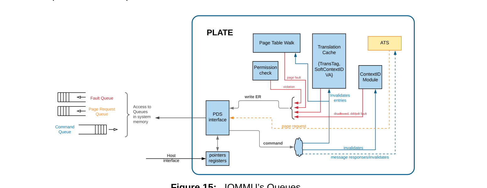
Host 软件通过环形缓冲实现的队列与 IOMMU 交互：
- Command Queue（CQ）：软件请求 IOMMU 执行某些动作，如失效上下文条目、失效翻译缓存、通过 ATS 接口向 Root Port 发消息。
- Fault Queue（FQ）：IOMMU 向 host 软件报告错误，如 page fault 或非法命令。
- Page-Request Queue（PQ）：IOMMU 报告来自 PCIe 设备的 Page Request 消息；只有 IOMMU 支持 PCIe ATS 时才存在。
| 队列 | 方向 | 用途 | 内核实现 |
|---|---|---|---|
| CQ（Command Queue，命令队列） | 软件 -> 硬件 | 提交 IOTINVAL、IODIR、IOFENCE、ATS 命令 | cmdq，已启用 |
| FQ | 硬件 -> 软件 | 上报翻译故障、配置错误 | fltq，已启用 |
| PQ | 硬件 -> 软件 | 设备通过 PRI 请求缺页 | 当前内核未实现 |
5.2 环形 Command Queue
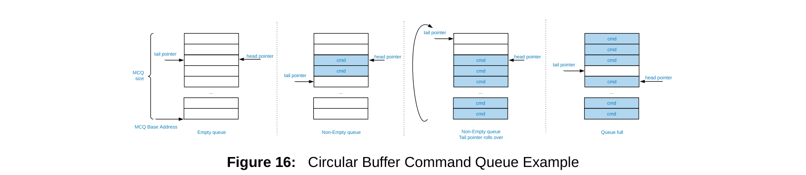
队列基地址和大小由软件通过 cqb 寄存器配置；tail 由软件维护（cqt），head 由硬件维护（cqh）。cqt 指向下一个可写入位置，cqh 指向下一个待处理命令。head 与 tail 在到达队列末尾时回绕（mod 2^(LOG2SZ+1)），因此 cqt == cqh - 1 表示队列满；当 cqh=0 时满条件即 cqt = 队列容量-1。队列空条件为 cqt == cqh。
IOMMU 按顺序从 CQ 取命令，但可以并发执行。如果软件要求顺序保证，必须显式插入 IOFENCE.C 命令：该命令会等待之前所有取出的命令完成后再完成自身。
若 IOMMU 检测到非法命令，队列会 stall：head 指针不更新，指向非法命令，需要软件诊断。
CQ 由 CQBASE、CQHEAD、CQTAIL、CQCSR 控制。软件把命令写入环形缓冲并推进 tail，硬件消费后推进 head。每个命令 16 字节。
iommu.c
static int riscv_iommu_queue_alloc(struct riscv_iommu_device *iommu,
struct riscv_iommu_queue *queue,
size_t entry_size)
{
/* 1. 写 QBR 探测硬件支持的最大 LOG2SZ */
riscv_iommu_writeq(iommu, queue->qbr, RISCV_IOMMU_QUEUE_LOG2SZ_FIELD);
logsz = ilog2(queue->mask);
/* 2. 若硬件未指定固定地址，则分配系统内存 */
queue->base = riscv_iommu_get_pages(iommu, max(queue_size, SZ_4K));
queue->phys = __pa(queue->base);
/* 3. 写回 QBR(PPN | LOG2SZ) 并回读校验 */
qb = phys_to_ppn(queue->phys) |
FIELD_PREP(RISCV_IOMMU_QUEUE_LOG2SZ_FIELD, logsz);
riscv_iommu_writeq(iommu, queue->qbr, qb);
rb = riscv_iommu_readq(iommu, queue->qbr);
if (rb != qb)
return -ENODEV;
return 0;
}5.3 关键命令格式解析
所有命令都是 16 字节：dword0[63:0] 含 opcode + func + 控制位，dword1[63:0] 为命令专属 payload。
iommu-bits.h
struct riscv_iommu_command {
u64 dword0; /* opcode[6:0], func[9:7], 控制位 */
u64 dword1; /* 命令专属数据 */
};
#define RISCV_IOMMU_CMD_OPCODE GENMASK_ULL(6, 0)
#define RISCV_IOMMU_CMD_FUNC GENMASK_ULL(9, 7)IOTINVAL — 失效地址翻译缓存
| 字段（dword0） | 位域 | 说明 |
|---|---|---|
opcode | 6:0 | 1 |
func | 9:7 | 0 = VMA（first-stage），1 = GVMA（G-stage） |
AV | 10 | Address Valid：1 时按 ADDR 失效指定页，0 时失效整个地址空间。 |
PSCID | 31:12 | 当 PSCV=1 时指定 PSCID。 |
PSCV | 32 | PSCID Valid：1 时按 PSCID 过滤。 |
GV | 33 | GSCID Valid：1 时按 GSCID 过滤 G-stage。 |
GSCID | 59:44 | 当 GV=1 时指定 GSCID。 |
ADDR（dword1） | 61:10 | 4K 对齐页地址（物理页号右移两位后的格式）。 |
iommu-bits.h
static inline void riscv_iommu_cmd_inval_vma(struct riscv_iommu_command *cmd)
{
cmd->dword0 = FIELD_PREP(RISCV_IOMMU_CMD_OPCODE, RISCV_IOMMU_CMD_IOTINVAL_OPCODE) |
FIELD_PREP(RISCV_IOMMU_CMD_FUNC, RISCV_IOMMU_CMD_IOTINVAL_FUNC_VMA);
cmd->dword1 = 0;
}
static inline void riscv_iommu_cmd_inval_set_addr(struct riscv_iommu_command *cmd, u64 addr)
{
cmd->dword1 = FIELD_PREP(RISCV_IOMMU_CMD_IOTINVAL_ADDR, phys_to_pfn(addr));
cmd->dword0 |= RISCV_IOMMU_CMD_IOTINVAL_AV;
}
static inline void riscv_iommu_cmd_inval_set_pscid(struct riscv_iommu_command *cmd, int pscid)
{
cmd->dword0 |= FIELD_PREP(RISCV_IOMMU_CMD_IOTINVAL_PSCID, pscid) |
RISCV_IOMMU_CMD_IOTINVAL_PSCV;
}IODIR — 失效目录缓存
| 字段（dword0） | 位域 | 说明 |
|---|---|---|
opcode | 6:0 | 3 |
func | 9:7 | 0 = INVAL_DDT，1 = INVAL_PDT |
PID | 31:12 | INVAL_PDT 时指定 PASID。 |
DV | 33 | DeviceID Valid：1 时按 DID 过滤；0 时失效全部。 |
DID | 63:40 | 当 DV=1 时指定 DeviceID。 |
IOFENCE.C — 命令完成屏障
| 字段（dword0） | 位域 | 说明 |
|---|---|---|
opcode | 6:0 | 2 |
func | 9:7 | 0 = C（Completion） |
AV | 10 | 1 = 完成后向 dword1 地址写 DATA。 |
WSI（Wire-Signaled Interrupt，有线中断） | 11 | 1 = 完成后发线中断而非 MSI。 |
PR / PW | 12 / 13 | 是否对通知地址做读/写 prefetch。 |
DATA | 63:32 | AV=1 时写入的数据。 |
ADDR（dword1） | 63:0 | 字对齐通知地址，右移两位存储。 |
iommu-bits.h
static inline void riscv_iommu_cmd_iofence(struct riscv_iommu_command *cmd)
{
cmd->dword0 = FIELD_PREP(RISCV_IOMMU_CMD_OPCODE, RISCV_IOMMU_CMD_IOFENCE_OPCODE) |
FIELD_PREP(RISCV_IOMMU_CMD_FUNC, RISCV_IOMMU_CMD_IOFENCE_FUNC_C) |
RISCV_IOMMU_CMD_IOFENCE_PR | RISCV_IOMMU_CMD_IOFENCE_PW;
cmd->dword1 = 0;
}ATS 命令（可选）
| 命令 | opcode/func | 作用 |
|---|---|---|
ATS.INVAL | 4 / 0 | 通知 PCIe 设备失效其 ATC（Address Translation Cache）中指定地址。 |
ATS.PRGR | 4 / 1 | 对 PRI Page Request 的响应，告诉设备页面已就绪或失败。 |
ATS.INVAL：让 IOMMU 向指定 PCIe 设备 function（由 RID 标识）发送 Invalidation Request，清除该设备地址转换缓存（ATC）中的某个地址范围。命令完成条件是收到设备的 Invalidation Completion 响应，或协议定义的超时发生。
ATS.PRGR：对 Page Request 的响应，告诉设备对应 Page Request Group 的页面已就绪或失败。
IOFENCE.C 的用法：如果软件需要确认所有先前的 ATS.INVAL 都已完成，可以发一个 IOFENCE.C 命令等待；IOFENCE.C 保证不会在所有先前取出的命令完成前完成。
5.4 驱动中的命令提交
iommu.c
static void riscv_iommu_cmd_send(struct riscv_iommu_device *iommu,
struct riscv_iommu_command *cmd)
{
riscv_iommu_queue_send(&iommu->cmdq, cmd, sizeof(*cmd));
}
static void riscv_iommu_cmd_sync(struct riscv_iommu_device *iommu,
unsigned int timeout_us)
{
struct riscv_iommu_command cmd;
unsigned int prod;
riscv_iommu_cmd_iofence(&cmd);
prod = riscv_iommu_queue_send(&iommu->cmdq, &cmd, sizeof(cmd));
if (timeout_us)
riscv_iommu_queue_wait(&iommu->cmdq, prod, timeout_us);
}写进 CQ 只是提交，硬件异步执行。要让前面的失效真正完成，必须发 IOFENCE.C 并等待。
第 6 章寄存器接口
6.1 寄存器空间总览
SiFive IOMMU-22 的 MMIO 空间主要分控制区（4KB）和 Error Bank（4KB）。软件通过 Host 接口读写这些 CSR（Control & Status Register，控制状态寄存器）。下表给出规范定义的偏移、宽度与作用：
| 偏移 | 宽度 | 寄存器 | 全称 | 作用 |
|---|---|---|---|---|
| 0x0000 | 64 | CAPABILITIES | Capabilities | 硬件能力 |
| 0x0008 | 32 | FCTL | Feature Control | 字节序（BE）、WSI、GXL（G-stage eXtension Level，G-stage 地址模式选择） |
| 0x0010 | 64 | DDTP | Device Directory Table Pointer | DDT 根 + 翻译总开关 |
| 0x0018 | 64 | CQB | Command Queue Base | CQ 基址与 LOG2SZ |
| 0x0020 | 32 | CQH | Command Queue Head | 硬件消费指针 |
| 0x0024 | 32 | CQT | Command Queue Tail | 软件生产指针 |
| 0x0028 | 64 | FQB | Fault Queue Base | FQ 基址与 LOG2SZ |
| 0x0030 | 32 | FQH | Fault Queue Head | 软件消费指针 |
| 0x0034 | 32 | FQT | Fault Queue Tail | 硬件生产指针 |
| 0x0038 | 64 | PQB | Page Request Queue Base | PQ 基址与 LOG2SZ |
| 0x0040 | 32 | PQH | Page Request Queue Head | 软件消费指针 |
| 0x0044 | 32 | PQT | Page Request Queue Tail | 硬件生产指针 |
| 0x0048 | 32 | CQCSR | Command Queue CSR | CQ 使能/中断/错误状态 |
| 0x004C | 32 | FQCSR | Fault Queue CSR | FQ 使能/中断/错误状态 |
| 0x0050 | 32 | PQCSR | Page Request Queue CSR | PQ 使能/中断/错误状态 |
| 0x0054 | 32 | IPSR | Interrupt Pending Status | 中断pending位（RW1C） |
| 0x0058 | 32 | IOCOUNTOVF | Counter Overflow Status | HPM 计数器溢出状态 |
| 0x005C | 32 | IOCOUNTINH | Counter Inhibit | HPM 计数器禁止 |
| 0x0060 | 64 | IOHPMCYCLES | Performance Cycle Counter | 周期计数器 |
| 0x0068..0x0158 | 64×31 | IOHPMCTR[n] | Event Counter | 事件计数器 |
| 0x0160..0x0250 | 64×31 | IOHPMEVT[n] | Event Selector | 事件选择器 |
| 0x0258 | 64 | TR_REQ_IOVA | Translation Request IOVA | 调试翻译请求的输入地址 |
| 0x0260 | 64 | TR_REQ_CTL | Translation Request Control | 启动/控制调试翻译 |
| 0x0268 | 64 | TR_RESPONSE | Translation Request Response | 调试翻译结果 |
| 0x02F8 | 64 | ICVEC | Interrupt Cause to Vector | 中断源到向量映射 |
| 0x0300..0x04F0 | 64×32 | MSI_CFG_TBL[n] | MSI Configuration Table | 每个向量的 MSI 地址/数据/控制 |
| 0x1000.. | — | Error Bank | Error Record Registers | 自定义故障详细信息 |
6.2 五组寄存器位域详解
1) CAPABILITIES（0x0000）— 先看硬件支持什么
| 位域 | 名称 | 含义 |
|---|---|---|
| 7:0 | VERSION | 规范版本号（1.0 = 0x10）。 |
| 8 | SV32 | 支持 Sv32 first-stage。 |
| 9 | SV39 | 支持 Sv39 first-stage。 |
| 10 | SV48 | 支持 Sv48 first-stage。 |
| 11 | SV57 | 支持 Sv57 first-stage。 |
| 15 | SVPBMT（Sv-mode with PBMT） | 支持 PMA（Physical Memory Attribute）页表属性中的 PBMT（Page-Based Memory Type）位。 |
| 16..19 | SV32X4/SV39X4/SV48X4/SV57X4 | 支持对应 G-stage 分页模式。 |
| 21 | AMO_MRIF | 支持以 AMO（Atomic Memory Operation，原子内存操作）方式更新 MRIF。 |
| 22 | MSI_FLAT | 支持 flat MSI 页表（extended DC 格式）。 |
| 23 | MSI_MRIF | 支持 MRIF MSI 模式。 |
| 24 | AMO_HWAD | 硬件自动更新 A/D 位。 |
| 25 | ATS | 支持 PCIe ATS。 |
| 26 | T2GPA | 支持 ATS 失败返回 GPA。 |
| 27 | END | 支持大端模式。 |
| 29:28 | IGS | 中断生成支持：0=MSI, 1=WSI, 2=Both。 |
| 30 | HPM | 支持硬件性能监控。 |
| 31 | DBG | 支持调试翻译请求寄存器。 |
| 37:32 | PAS | 支持的 PASID 位数减 1。 |
| 38..40 | PD8/PD17/PD20 | 支持对应 PDT 模式。 |
2) FCTL（0x0008）— 字节序与中断类型
| 位 | 名称 | 含义 |
|---|---|---|
| 0 | BE | 大端使能。初始化时驱动会把它配成与 CPU 字节序一致。 |
| 1 | WSI | 0 = MSI，1 = 线中断（Wire-Signaled Interrupt）。 |
| 2 | GXL | 0 = G-stage 用 Sv39x4/Sv48x4/Sv57x4；1 = Sv32x4。 |
3) DDTP（0x0010）— 翻译总开关
| 位域 | 名称 | 含义 |
|---|---|---|
| 3:0 | MODE | 0=OFF, 1=BARE, 2=1LVL, 3=2LVL, 4=3LVL。 |
| 4 | BUSY | 写 1 后硬件正在切换模式，软件需轮询为 0。 |
| 53:10 | PPN | DDT 根页物理页号。 |
WARL（Write Any, Read Legal）是 RISC-V 寄存器字段的约定：软件可写任意值，硬件按实际能力返回合法值。下面这段代码就用 WARL 特性探测硬件支持的 DDT 级数——驱动写期望级数，读回实际级数，若不符则降级重试。
iommu.c (WARL 回退)
do {
rq_ddtp = FIELD_PREP(RISCV_IOMMU_DDTP_IOMMU_MODE, rq_mode);
if (rq_mode > RISCV_IOMMU_DDTP_IOMMU_MODE_BARE)
rq_ddtp |= phys_to_ppn(iommu->ddt_phys);
riscv_iommu_writeq(iommu, RISCV_IOMMU_REG_DDTP, rq_ddtp);
ddtp = riscv_iommu_read_ddtp(iommu);
mode = FIELD_GET(RISCV_IOMMU_DDTP_IOMMU_MODE, ddtp);
if (rq_mode == mode)
break;
if (mode < RISCV_IOMMU_DDTP_IOMMU_MODE_1LVL &&
rq_mode > RISCV_IOMMU_DDTP_IOMMU_MODE_1LVL) {
rq_mode--; /* 硬件不支持，尝试更少级数 */
continue;
}
return -EINVAL;
} while (1);4) 队列寄存器组（CQB/FQB/PQB + CSR）
*BASE 寄存器格式相同：PPN[53:10] + LOG2SZ[4:0]，队列实际条目数为 2^(LOG2SZ+1)。每个队列 CSR 位域如下：
| 位 | 名称 | CQ/FQ/PQ 中的含义 |
|---|---|---|
| 0 | ENABLE | 软件写 1 请求使能队列。 |
| 1 | INTR_ENABLE | 允许队列事件触发中断。 |
| 8 | *MF | 访问队列内存出错（Memory Fault）。 |
| 9 | *OF / CQ CSR.CMD_TO | FQ/PQ 队列溢出；CQ 命令超时（同一 bit 在不同队列含义不同）。 |
| 10 | CQ CSR.CMD_ILL | CQ 收到非法命令。 |
| 11 | CQ CSR.FENCE_W_IP | IOFENCE.C（WSI=1）写通知中断 pending 状态。 |
| 16 | *ON | 硬件已真正激活队列。 |
| 17 | BUSY | 硬件正在使能/禁用队列。 |
5) IPSR / ICVEC / MSI_CFG_TBL
| 寄存器 | 位域 | 含义 |
|---|---|---|
| IPSR | 0 | CIP — CQ 中断 pending。 |
| IPSR | 1 | FIP — FQ 中断 pending。 |
| IPSR | 2 | PMIP — HPM 计数器溢出 pending。 |
| IPSR | 3 | PIP — PQ 中断 pending。 |
| ICVEC | 3:0 | CIV — CQ 中断映射到的 MSI 向量。 |
| ICVEC | 7:4 | FIV — FQ 中断映射到的 MSI 向量。 |
| ICVEC | 11:8 | PMIV — HPM 中断映射到的 MSI 向量。 |
| ICVEC | 15:12 | PIV — PQ 中断映射到的 MSI 向量。 |
| MSI_CFG_TBL_ADDR[n] | 55:2 | 向量 n 的 MSI 目标地址（去掉低 2 bit）。 |
| MSI_CFG_TBL_DATA[n] | 31:0 | 向量 n 的 MSI 数据。 |
| MSI_CFG_TBL_CTRL[n] | 0 | 向量 n 的 Mask 位。 |
对 IPSR 写 1 会清除对应 pending 位，写 0 无影响。中断处理程序进入后先写 IPSR = (1 << qid) 清掉 pending 位，再处理队列中的事件——这样在处理期间到达的新事件会再次置位 IPSR，触发下一次中断，不会丢失。如果"处理完再清"则可能把处理期间到达的新事件误清掉。内核驱动 riscv_iommu_queue_consume() 遵循此顺序。
6.3 DDTP 为什么是压轴
DDTP.MODE 是一切翻译的“总开关”。切到 1LVL/2LVL/3LVL 前，必须完成：读取 CAP、配置中断与 ICVEC、分配 DDT、分配并启用 CQ/FQ、必要时配置 MSI。否则 DMA 请求到达时可能找不到 DC 或 FQ 未就绪，导致大量 fault。
内核初始化顺序（第 8 章还会详细讲）：
init_check：读 CAP、FCTL、配置 ICVEC。iodir_alloc：分配 DDT 根页。queue_alloc + queue_enable：CQ 与 FQ。iodir_set_mode：最后写 DDTP，使能翻译。
第 7 章中断、故障与页请求
7.1 中断路由链
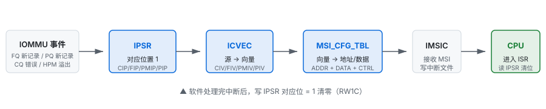
中断处理流程：
- 硬件事件（FQ 新记录 / HPM（Hardware Performance Monitor，硬件性能监视器）溢出）使
IPSR对应位置 1。 ICVEC把中断源映射到 0~N 向量（CIV/FIV/PIV/PMIV）。MSI_CFG_TBL给出该向量的目标地址与数据，硬件发 MSI。- IMSIC（Incoming MSI Controller，RISC-V AIA（Advanced Interrupt Architecture，高级中断架构）中接收 MSI 的硬件单元）接收 MSI，CPU 进入 ISR（Interrupt Service Routine，中断服务例程）；软件读 IPSR、处理记录，再以 RW1C（Write-1-to-Clear，写 1 清零）方式清零。
7.2 Fault Record 结构
当翻译失败或检测到配置错误，IOMMU 向 FQ 写入一条 32 字节记录：
iommu-bits.h
struct riscv_iommu_fq_record {
u64 hdr; /* 原因、PID/DID、事务类型 */
u64 _reserved; /* 低 32bit 自定义，高 32bit 保留 */
u64 iotval; /* 触发故障的地址 */
u64 iotval2; /* cause 相关的辅助值 */
};hdr 字段位域
| 字段 | 位域 | 说明 |
|---|---|---|
CAUSE | 11:0 | 故障/事件原因码。 |
PID | 31:12 | ProcessID（PASID）。 |
PV | 32 | PID 有效。 |
PRIV | 33 | 事务请求监督模式权限。 |
TTYP | 39:34 | 事务类型。 |
DID | 63:40 | DeviceID。 |
iotval / iotval2 含义
iotval：通常是触发 fault 的事务地址（IOVA/GVA）。对于 ATS 转换请求，它是 untranslated address。iotval2：仅对 guest-page fault（cause 20/21/23）有意义，表示翻译到的 GPA。
7.3 Cause 码与 TTYP
Cause 码分为两大类：低 256 为 transaction fault，256 以上为 IOMMU 数据结构/内部错误。
事务相关 Cause
事务类 cause 分两类：access fault（1/5/7，物理层问题——PMP 拒绝、总线错误、内存不存在）与 page fault（12/13/15 first-stage、20/21/23 G-stage，页表项缺失或权限不足）。前者查 PMP/地址有效性，后者查页表映射与权限位。
| Cause | 名称 | 触发条件 |
|---|---|---|
| 1 | INST_FAULT | 取指访问被 PMP/IO 总线拒绝。 |
| 4 | RD_ADDR_MISALIGNED | 读地址未对齐。 |
| 5 | RD_FAULT | 读访问被 PMP/IO 总线拒绝。 |
| 6 | WR_ADDR_MISALIGNED | 写地址未对齐。 |
| 7 | WR_FAULT | 写访问被 PMP/IO 总线拒绝。 |
| 12 | INST_FAULT_S | First-stage 取指页表 fault。 |
| 13 | RD_FAULT_S | First-stage 读页表 fault。 |
| 15 | WR_FAULT_S | First-stage 写页表 fault。 |
| 20 | INST_FAULT_VS | Guest（second-stage）取指页表 fault。 |
| 21 | RD_FAULT_VS | Guest 读页表 fault。 |
| 23 | WR_FAULT_VS | Guest 写页表 fault。 |
IOMMU 数据结构相关 Cause
| Cause | 名称 | 触发条件 |
|---|---|---|
| 256 | DMA_DISABLED | DDTP.MODE=OFF，所有入站事务被拒绝。 |
| 257 | DDT_LOAD_FAULT | 读取 DDT 时内存访问失败。 |
| 258 | DDT_INVALID | DC.tc.V=0，设备未 attach 到任何 domain。 |
| 259 | DDT_MISCONFIGURED | DC 字段非法（如 MODE 不被支持）。 |
| 260 | TTYP_BLOCKED | DC.tc 禁止了该事务类型（如 PRI/ATS）。 |
| 261..264 | MSI_* / MRIF_FAULT | MSI 页表读取/配置 fault（SiFive 不适用）。 |
| 265..267 | PDT_* | PDT 读取/无效/配置错误。 |
| 268..271 | *_CORRUPTED | 检测到 DDT/PDT/MSI/MRIF 数据损坏。 |
| 272 | INTERNAL_DP_ERROR | IOMMU 内部数据通路错误。 |
| 273 | MSI_WR_FAULT | IOMMU 自己写 MSI 失败。 |
| 274 | PT_CORRUPTED | First/second stage 页表项非法。 |
TTYP 事务类型
| TTYP | 含义 |
|---|---|
| 0 | NONE：非事务触发的事件。 |
| 1 | Untranslated instruction fetch。 |
| 2 | Untranslated read。 |
| 3 | Untranslated write/AMO。 |
| 5 | Translated instruction fetch。 |
| 6 | Translated read。 |
| 7 | Translated write/AMO。 |
| 8 | PCIe ATS translation request。 |
| 9 | PCIe message request。 |
iommu.c
static void riscv_iommu_fault(struct riscv_iommu_device *iommu,
struct riscv_iommu_fq_record *event)
{
unsigned int err = FIELD_GET(RISCV_IOMMU_FQ_HDR_CAUSE, event->hdr);
unsigned int devid = FIELD_GET(RISCV_IOMMU_FQ_HDR_DID, event->hdr);
/* Placeholder for future fault handling implementation, report only. */
if (err)
dev_warn_ratelimited(iommu->dev,
"Fault %d devid: 0x%x iotval: %llx iotval2: %llx\n",
err, devid, event->iotval, event->iotval2);
}Linux RISC-V IOMMU 驱动目前不对 fault 做恢复；完整 fault 处理通常由 VFIO / 用户态完成。这意味着如果设备访问未映射 IOVA，只会看到 dmesg 中的 fault 日志，DMA 会被丢弃。
7.4 Page Request：让设备也能“缺页中断”
7.4.1 为什么需要 PRI
传统 DMA 流程里，设备访问的 IOVA 必须预先映射好物理页——软件先 pin 住物理页、在 IOMMU 页表里建好映射，然后才让设备发起 DMA。如果设备访问了未映射的 IOVA，IOMMU 直接报 fault 并丢弃请求。这种"预先映射"模式对内核驱动分配的 DMA buffer 没问题，但与 SVA（Shared Virtual Addressing，共享虚拟地址） 场景冲突。
SVA 的要求：SVA 让设备直接用应用程序的虚拟地址（在 IOMMU 视角是 GVA）做 DMA，与 CPU 共享同一套页表。这意味着设备访问的地址空间有以下特点：
设备不是"自己知道"进程 VA，而是由用户态驱动把 VA 告诉设备。完整链路如下：
- VA 的来源：应用程序通过用户态驱动（如 VFIO）把数据缓冲区的虚拟地址直接写到设备的 DMA 描述符/寄存器里。例如 GPU 应用提交 compute job 时，vertex buffer 的地址就是进程 VA，而非内核分配的 IOVA。
- 设备如何标识"这是哪个进程的 VA"：设备发起 DMA 时，除了地址外，还携带 PASID（由内核在 SVA bind 阶段分配给该设备-进程对）。IOMMU 收到请求后，用 DeviceID 查 DDT 找到 DC，再用 PASID 查 PDT 找到 PC，PC.fsc 指向该进程的 first-stage 页表——然后用进程自己的页表把这个 VA 翻译成 PA。
- PRI 请求中的 VA 从哪来：设备发起 DMA 访问某个 VA 时，IOMMU 查进程页表发现该页未映射（或缺权限）。此时 IOMMU 不直接 fault，而是把"<设备 X, PASID Y> 请求访问 VA Z"写入 PQ。这个 VA Z 就是设备原本要访问的那个 VA——它来自步骤 1 中用户态驱动写给设备的地址。
简言之：用户态驱动给设备 VA → 设备带 PASID 发 DMA → IOMMU 用 PASID 找到进程页表 → 翻译失败则把该 VA 写入 PQ 请求软件帮忙。PRI 请求里的 VA 不是设备凭空产生的，而是应用程序明确要求设备访问的地址。
核心矛盾：既然知道要访问哪些 VA，为什么不直接"预先准备好"？
这是理解 PRI 的关键问题。既然用户态驱动已经把 VA 告诉了设备，为什么不直接把这个 VA 对应的物理页 pin 住、在 IOMMU 页表里建好映射，让设备一次访问成功？答案在于 SVA 场景下"预先准备好"有四个无法接受的代价：
- 代价一：内存浪费。进程的虚拟地址空间可达 TB 级（mmap 大文件、GPU sparse 资源、数据库 buffer pool），但任意时刻只零星访问其中几页。若把所有可能被访问的 VA 都预先 pin 住物理页，等于把整个虚拟地址空间锁在物理内存里，浪费几个数量级的内存。
- 代价二：VA 的访问范围往往运行时才知道。很多场景下，驱动无法预先穷举设备会访问哪些 VA：GPU 的纹理采样地址由 shader 运行时计算、数据库的随机查询由查询计划决定、ML 训练的稀疏张量访问由数据分布决定。驱动手里只有"一段 VA 范围"，具体访问哪几页要等设备跑起来才知道。
- 代价三：破坏按需分页（demand paging）。现代 OS 的内存管理建立在"只有真正访问的页才分配物理页"这一原则之上——CPU 也是访问到某页时才触发 page fault 分配。预先准备好所有页，等于退回到"一次性全部分配"的原始模式，违背了虚拟内存的核心设计。
- 代价四：与 swap / 内存回收冲突。即使勉强 pin 住，这些页就无法被 swap 出去，系统内存紧张时无法回收。若用
mlock锁住所有页，又回到代价一（内存浪费）；若不锁，页可能被换出，设备访问时还是会缺页。
结论：SVA 的核心价值就是"设备像 CPU 一样按需访问进程地址空间"，而"按需"本身就意味着不能预先准备好。设备必然会遇到"VA 尚未映射到物理页"的情况。
真正的痛点：CPU 能缺页，设备不能
既然设备必然会遇到缺页，那 CPU 是怎么处理的？CPU 访问未映射页时触发 page fault，内核缺页处理程序分配物理页、建立映射、恢复执行——整个过程对应用透明。但传统 DMA 设备没有这个能力：
- IOMMU 查进程页表发现 VA 未映射 → 直接生成 fault record 写入 FQ（Fault Queue），并丢弃该 DMA 请求。
- 设备不知道该 VA 之后会不会被映射，也无法"请求软件帮忙映射后再重试"——它只能收到一个错误，DMA 失败。
- 结果是：SVA 场景下，只要进程某个 VA 还没被 CPU 访问过（没有物理页），设备访问它就会失败。这让 SVA 实际上不可用。
设备缺少的正是 CPU 那套"缺页 → 请求软件 → 软件映射 → 恢复执行"的机制。
PRI：让设备像 CPU 一样"缺页请求"
PCIe PRI（Page Request Interface） 就是填补这个缺口的机制。当 ATS 转换失败或页表项缺失时，设备不直接放弃，而是向 IOMMU 发 Page Request：
- 设备发起 DMA 访问 VA Z（带 PASID），IOMMU 查进程页表发现未映射。
- IOMMU 不直接 fault，而是把"<设备 X, PASID Y> 请求访问 VA Z"写入 PQ（Page Request Queue）。
- 软件从 PQ 读到请求，像处理 CPU page fault 一样：分配物理页、在进程页表里建立 VA Z → PA 映射。
- 软件通过 PRGR（Page Request Group Response） 通知设备"页已就绪，可以重试"。
- 设备重新发起对 VA Z 的 DMA，这次 IOMMU 翻译成功。
这让 IOMMU 从"被动报错并丢弃"变成"主动协作按需映射"，是 SVA 真正可用的前提。对照 CPU 侧：CPU page fault 是"CPU → 内核"的同步异常；PRI 是"设备 → IOMMU → 软件"的异步请求——机制对称，只是触发源和路径不同。
Fault 是“翻译失败，请求被丢弃”，需要软件事后诊断；PRI 是“主动请软件帮忙映射一页”，成功后设备可以继续这次 DMA。PRI 让 IOMMU 从“被动报错”变成“主动协作”。
7.4.2 使能 PRI 的条件
不是随便一个设备都能用 PRI，需要同时满足：
- 设备能力：PCIe 设备在 ATS Capability 里声明支持 Page Request（部分旧设备或简化设备不支持）。
- IOMMU 能力：
CAPABILITIES需要支持 PQ（规范中 PQ 是可选队列）。 - 软件使能：
DC.tc.EN_PRI=1，并且分配/使能 PQ、注册中断处理。
RISC-V IOMMU 规范中，PQ 与 CQ/FQ 一样是基于内存的环形队列，也有对应的 PQB / PQH / PQT / PQCSR 寄存器。Linux 当前驱动未实现 PQ，所以实际产品里 EN_PRI 保持 0。
7.4.3 一个 PRI 请求的完整生命周期
下图展示了从设备发起 DMA 到最终重试成功的完整 8 步流程。关键在于：IOMMU 发现缺页后不直接 fault，而是写入 PQ Record 通知软件；软件分配物理页并建立映射后，通过 ATS.PRGR 命令把响应回送给设备，设备才会重试。
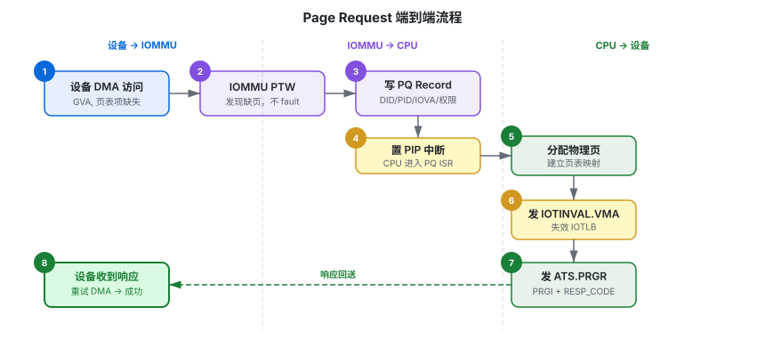
7.4.4 PRGR 响应码与 Page Request Group
设备会把相关的 Page Request 归到一个 Page Request Group（PRG） 里，用 PRGI（Page Request Group Index） 标识。软件通过 ATS.PRGR 命令一次性响应整个组，而不是逐页响应。响应码定义如下：
| RESP_CODE | 含义 | 设备行为 |
|---|---|---|
| 0 | Success | 页面已就绪，可以重试原请求。 |
| 1 | Failure | 软件无法完成映射，设备应放弃或上报错误。 |
| 2 | Invalid Request | 请求格式非法或超出范围。 |
| 3 | Response Failure | IOMMU 在发送响应时遇到错误。 |
ATS.PRGR 命令格式见附录 E；PQ Record 的字段细节见 7.7 节。
当前 iommu.c 没有注册 PQ 中断处理，也没有 riscv_iommu_pq_process()。因此 DC.tc.EN_PRI 应保持 0，否则设备发起 PRI 请求后 IOMMU 无法投递到驱动，可能导致设备挂起。
7.5 MSI 与 WSI 配置完整流程
RISC-V IOMMU 规范支持两种中断方式：MSI（Message-Signaled Interrupt） 和 WSI（Wire-Signaled Interrupt）。具体由 CAPABILITIES.IGS 能力位决定，由 FCTL.WSI 控制当前使能哪一种。
| IGS 值 | 含义 | Linux 驱动行为 |
|---|---|---|
| 0 | 仅 MSI | 必须分配 MSI，否则 probe 失败。 |
| 1 | 仅 WSI | 使用 platform_get_irq 获取有线中断。 |
| 2 | Both | 优先 MSI，失败可回退 WSI（platform 路径）。 |
| 3 | 保留 | 非法，probe 失败。 |
MSI 配置链
platform 路径的 MSI 初始化可以分为四步：
- 找 MSI domain（Linux IRQ 子系统中负责 MSI 中断分发的 irq_domain）：设备树用
msi-parent指向 IMSIC；ACPI（Advanced Configuration and Power Interface）用imsic_acpi_get_fwnode()查找。 - 分配虚拟 IRQ：
platform_device_msi_init_and_alloc_irqs()为 4 个中断源（CQ/FQ/PM/PQ）各分配一个虚拟 IRQ，同时注册riscv_iommu_write_msi_msg()回调。 - 写 MSI_CFG_TBL：IMSIC 分配好物理地址和数据后，回调把 {addr, data} 写入
MSI_CFG_TBL_ADDR[n]/DATA[n]，并清CTRL[n].M取消 mask。 - 映射中断源到向量：
init_check()写ICVEC，把 CIP/FIP/PMIP/PIP 映射到 0~3 向量。
iommu-platform.c
static void riscv_iommu_write_msi_msg(struct msi_desc *desc, struct msi_msg *msg)
{
struct device *dev = msi_desc_to_dev(desc);
struct riscv_iommu_device *iommu = dev_get_drvdata(dev);
u16 idx = desc->msi_index;
u64 addr;
addr = ((u64)msg->address_hi << 32) | msg->address_lo;
addr &= RISCV_IOMMU_MSI_CFG_TBL_ADDR;
riscv_iommu_writeq(iommu, RISCV_IOMMU_REG_MSI_CFG_TBL_ADDR(idx), addr);
riscv_iommu_writel(iommu, RISCV_IOMMU_REG_MSI_CFG_TBL_DATA(idx), msg->data);
riscv_iommu_writel(iommu, RISCV_IOMMU_REG_MSI_CFG_TBL_CTRL(idx), 0);
}WSI 配置链
当硬件只支持 WSI 或 MSI 分配失败且 IGS=BOTH 时，驱动走 WSI 路径：
- 通过
platform_irq_count()/platform_get_irq()获取设备树声明的有线中断。 - 置
FCTL.WSI=1，让 IOMMU 用物理 IRQ 线而不是 MSI。 - ICVEC 仍要配置，但此时向量号只决定哪根 IRQ 线被拉高，不经过 MSI_CFG_TBL。
iommu-pci.c 只使用 MSI（它调用 pci_alloc_irq_vectors(..., PCI_IRQ_MSIX | PCI_IRQ_MSI)）。如果 IOMMU 作为 PCIe 端点出现但 CAPABILITIES.IGS 报告只支持 WSI，probe 会失败。这是合理的，因为 PCIe 设备通常用 MSI 或 MSI-X（多向量消息中断）交付中断。
7.6 中断处理代码路径
每个队列的中断处理都是 Linux 内核常见的"顶半部（top half）+ 底半部（bottom half）"模型：顶半部在硬中断上下文快速判 Pending 并唤醒线程，避免长时间占用硬中断；底半部在线程上下文执行实际处理工作。这里顶半部 riscv_iommu_queue_ipsr() 只读 IPSR 判 Pending，底半部在线程中处理具体事件。
iommu.c
static irqreturn_t riscv_iommu_queue_ipsr(int irq, void *data)
{
struct riscv_iommu_queue *queue = (struct riscv_iommu_queue *)data;
if (riscv_iommu_readl(queue->iommu, RISCV_IOMMU_REG_IPSR) & Q_IPSR(queue))
return IRQ_WAKE_THREAD;
return IRQ_NONE;
}
static irqreturn_t riscv_iommu_fltq_process(int irq, void *data)
{
struct riscv_iommu_queue *queue = ...;
struct riscv_iommu_device *iommu = queue->iommu;
struct riscv_iommu_fq_record *events = queue->base;
unsigned int ctrl, idx;
int cnt, len;
/* 先清 pending */
riscv_iommu_writel(iommu, RISCV_IOMMU_REG_IPSR, Q_IPSR(queue));
do {
cnt = riscv_iommu_queue_consume(queue, &idx);
for (len = 0; len < cnt; idx++, len++)
riscv_iommu_fault(iommu, &events[Q_ITEM(queue, idx)]);
riscv_iommu_queue_release(queue, cnt);
} while (cnt > 0);
/* 检查 FQ 溢出 / 内存 fault */
ctrl = riscv_iommu_readl(iommu, queue->qcr);
if (ctrl & (RISCV_IOMMU_FQCSR_FQMF | RISCV_IOMMU_FQCSR_FQOF)) {
riscv_iommu_writel(iommu, queue->qcr, ctrl); /* RW1C */
dev_warn(iommu->dev, "Queue #%u error; memory fault:%d overflow:%d\n",
queue->qid, !!(ctrl & FQMF), !!(ctrl & FQOF));
}
return IRQ_HANDLED;
}要点：
- IPSR 是 RW1C：写 1 清除对应 pending 位。顶半部/底半部都要清，防止中断风暴。
- FQ 消费：硬件写
FQT作为生产者，软件读FQH作为消费者。riscv_iommu_queue_consume()读硬件FQT并更新 shadow tail，再批量处理。 - CQ 中断：目前主要用于报告命令错误（CMD_TO、CMD_ILL、CQMF），正常命令完成由
IOFENCE.C的轮询等待处理，不依赖中断。
7.7 Page Request 协议细节
Page Request Interface（PRI）允许设备在页表项缺失时向软件请求页面，而不是直接 fault。这对支持 SVA（Shared Virtual Addressing）的设备很重要：设备可以像 CPU 一样触发缺页，由内核统一处理。
PQ Record 格式
iommu-bits.h
struct riscv_iommu_pq_record {
u64 hdr; /* DID / PID / PRIV / EXEC */
u64 payload; /* 页地址 / 权限 / Page Request Group */
};| 字段 | 位域 | 含义 |
|---|---|---|
hdr.DID | 63:40 | 请求设备。 |
hdr.PID | 31:12 | PASID。 |
hdr.PV | 32 | PASID 有效。 |
hdr.PRIV | 33 | 是否请求监督模式权限。 |
hdr.EXEC | 34 | 是否请求执行权限。 |
payload.R/W/L | 2:0 | 读/写/最后页（Last Page）请求。 |
payload.PRGI | 11:3 | Page Request Group Index，用于组响应。 |
payload.ADDR | 63:12 | 缺页的 4K 对齐地址。 |
软件响应
软件收到 PQ record 后，完成以下动作：
- 在对应 domain 的页表中建立映射（可能触发 CPU 缺页、swap in 等）。
- 发送
IOTINVAL.VMA让 IOMMU 看到新页表。 - 发送
ATS.PRGR命令，带PRGI和响应码，通知设备页面已就绪。
ATS.PRGR 命令格式
iommu-bits.h
/* dword0 */
#define RISCV_IOMMU_CMD_ATS_OPCODE 4
#define RISCV_IOMMU_CMD_ATS_FUNC_PRGR 1
#define RISCV_IOMMU_CMD_ATS_PID GENMASK_ULL(31, 12)
#define RISCV_IOMMU_CMD_ATS_PV BIT_ULL(32)
#define RISCV_IOMMU_CMD_ATS_DSV BIT_ULL(33)
#define RISCV_IOMMU_CMD_ATS_RID GENMASK_ULL(55, 40)
#define RISCV_IOMMU_CMD_ATS_DSEG GENMASK_ULL(63, 56)
/* dword1 */
#define RISCV_IOMMU_CMD_ATS_PRGR_PRG_INDEX GENMASK_ULL(40, 32)
#define RISCV_IOMMU_CMD_ATS_PRGR_RESP_CODE GENMASK_ULL(47, 44)
#define RISCV_IOMMU_CMD_ATS_PRGR_DST_ID GENMASK_ULL(63, 48)| 字段 | 位域 | 说明 |
|---|---|---|
opcode | 6:0 | 4，表示 ATS 类命令。 |
func | 9:7 | 1，表示 PRGR。 |
PID / PV | 31:12 / 32 | 与 PQ record 对应的 PASID。 |
DSV / RID / DSEG | 33 / 55:40 / 63:56 | 目标设备的 RID/DSEG，DSV=1 时有效。 |
PRGI | 40:32 | Page Request Group Index。 |
RESP_CODE | 47:44 | 0=Success, 1=Failure, 2=Invalid, 3=Response Failure。 |
DST_ID | 63:48 | 目标 DeviceID（部分实现使用）。 |
当前 iommu.c 没有注册 PQ 中断处理，也没有 riscv_iommu_pq_process()。因此 DC.tc.EN_PRI 应保持 0，否则设备发起 PRI 请求后 IOMMU 无法投递到驱动，可能导致设备挂起。
第 8 章Linux 内核驱动实现
8.1 文件组织
| 文件 | 职责 |
|---|---|
| iommu.c | 核心逻辑：队列、DDT、domain、失效、命令 |
| iommu-bits.h | 寄存器位定义、DC/PC/命令结构 |
| iommu.h | 内部结构、MMIO 读写宏 |
| iommu-platform.c | platform/ACPI 总线绑定、MSI/WSI 初始化 |
| iommu-pci.c | PCIe 端点设备绑定 |
8.2 初始化调用链
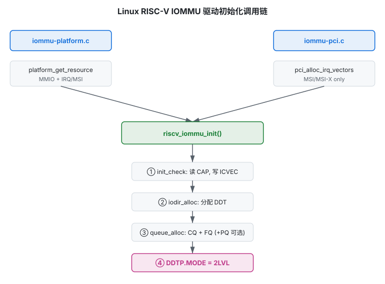
8.3 设备探测
Platform 与 PCI 两条路径最终都调用 riscv_iommu_init()。Platform 路径需要同时处理 MSI 与 WSI；PCI 路径只使用 MSI。
iommu-platform.c
static int riscv_iommu_platform_probe(struct platform_device *pdev)
{
enum riscv_iommu_igs_settings igs;
struct device *dev = &pdev->dev;
struct riscv_iommu_device *iommu = NULL;
struct irq_domain *msi_domain;
struct resource *res = NULL;
int vec, ret;
iommu = devm_kzalloc(dev, sizeof(*iommu), GFP_KERNEL);
iommu->dev = dev;
iommu->reg = devm_platform_get_and_ioremap_resource(pdev, 0, &res);
dev_set_drvdata(dev, iommu);
iommu->caps = riscv_iommu_readq(iommu, RISCV_IOMMU_REG_CAPABILITIES);
iommu->fctl = riscv_iommu_readl(iommu, RISCV_IOMMU_REG_FCTL);
iommu->irqs_count = RISCV_IOMMU_INTR_COUNT;
igs = FIELD_GET(RISCV_IOMMU_CAPABILITIES_IGS, iommu->caps);
switch (igs) {
case RISCV_IOMMU_CAPABILITIES_IGS_BOTH:
case RISCV_IOMMU_CAPABILITIES_IGS_MSI:
if (is_of_node(dev_fwnode(dev)))
of_msi_configure(dev, to_of_node(dev->fwnode));
else
dev_set_msi_domain(dev, irq_find_matching_fwnode(
imsic_acpi_get_fwnode(dev), DOMAIN_BUS_PLATFORM_MSI));
ret = platform_device_msi_init_and_alloc_irqs(dev, iommu->irqs_count,
riscv_iommu_write_msi_msg);
for (vec = 0; vec < iommu->irqs_count; vec++)
iommu->irqs[vec] = msi_get_virq(dev, vec);
if (iommu->fctl & RISCV_IOMMU_FCTL_WSI) {
iommu->fctl ^= RISCV_IOMMU_FCTL_WSI;
riscv_iommu_writel(iommu, RISCV_IOMMU_REG_FCTL, iommu->fctl);
}
break;
case RISCV_IOMMU_CAPABILITIES_IGS_WSI:
iommu->irqs_count = platform_irq_count(pdev);
for (vec = 0; vec < iommu->irqs_count; vec++)
iommu->irqs[vec] = platform_get_irq(pdev, vec);
if (!(iommu->fctl & RISCV_IOMMU_FCTL_WSI)) {
iommu->fctl |= RISCV_IOMMU_FCTL_WSI;
riscv_iommu_writel(iommu, RISCV_IOMMU_REG_FCTL, iommu->fctl);
}
break;
default:
return -ENODEV;
}
return riscv_iommu_init(iommu);
}iommu-pci.c
static int riscv_iommu_pci_probe(struct pci_dev *pdev,
const struct pci_device_id *ent)
{
struct device *dev = &pdev->dev;
struct riscv_iommu_device *iommu;
int rc, vec;
rc = pcim_enable_device(pdev);
if (rc)
return rc;
if (!(pci_resource_flags(pdev, 0) & IORESOURCE_MEM))
return -ENODEV;
if (pci_resource_len(pdev, 0) < RISCV_IOMMU_REG_SIZE)
return -ENODEV;
rc = pcim_iomap_regions(pdev, BIT(0), pci_name(pdev));
if (rc)
return dev_err_probe(dev, rc, "pcim_iomap_regions failed\n");
iommu = devm_kzalloc(dev, sizeof(*iommu), GFP_KERNEL);
iommu->dev = dev;
iommu->reg = pcim_iomap_table(pdev)[0];
pci_set_master(pdev);
dev_set_drvdata(dev, iommu);
iommu->caps = riscv_iommu_readq(iommu, RISCV_IOMMU_REG_CAPABILITIES);
iommu->fctl = riscv_iommu_readl(iommu, RISCV_IOMMU_REG_FCTL);
switch (FIELD_GET(RISCV_IOMMU_CAPABILITIES_IGS, iommu->caps)) {
case RISCV_IOMMU_CAPABILITIES_IGS_MSI:
case RISCV_IOMMU_CAPABILITIES_IGS_BOTH:
break;
default:
return dev_err_probe(dev, -ENODEV,
"unable to use message-signaled interrupts\n");
}
rc = pci_alloc_irq_vectors(pdev, 1, RISCV_IOMMU_INTR_COUNT,
PCI_IRQ_MSIX | PCI_IRQ_MSI);
iommu->irqs_count = rc;
for (vec = 0; vec < iommu->irqs_count; vec++)
iommu->irqs[vec] = msi_get_virq(dev, vec);
if (iommu->fctl & RISCV_IOMMU_FCTL_WSI) {
iommu->fctl ^= RISCV_IOMMU_FCTL_WSI;
riscv_iommu_writel(iommu, RISCV_IOMMU_REG_FCTL, iommu->fctl);
}
return riscv_iommu_init(iommu);
}8.4 队列与 DDT
riscv_iommu_init() 的完整骨架如下。注意 RISCV_IOMMU_QUEUE_INIT 宏把队列的 qbr（base 寄存器偏移）和 qcr（CSR 偏移）初始化好：
iommu.c
int riscv_iommu_init(struct riscv_iommu_device *iommu)
{
int rc;
RISCV_IOMMU_QUEUE_INIT(&iommu->cmdq, CQ);
RISCV_IOMMU_QUEUE_INIT(&iommu->fltq, FQ);
rc = riscv_iommu_init_check(iommu);
if (rc)
return dev_err_probe(iommu->dev, rc, "unexpected device state\n");
rc = riscv_iommu_iodir_alloc(iommu);
if (rc)
return rc;
rc = riscv_iommu_queue_alloc(iommu, &iommu->cmdq,
sizeof(struct riscv_iommu_command));
if (rc)
return rc;
rc = riscv_iommu_queue_alloc(iommu, &iommu->fltq,
sizeof(struct riscv_iommu_fq_record));
if (rc)
return rc;
rc = riscv_iommu_queue_enable(iommu, &iommu->cmdq, riscv_iommu_cmdq_process);
if (rc)
return rc;
rc = riscv_iommu_queue_enable(iommu, &iommu->fltq, riscv_iommu_fltq_process);
if (rc)
goto err_queue_disable;
rc = riscv_iommu_iodir_set_mode(iommu, RISCV_IOMMU_DDTP_IOMMU_MODE_MAX);
if (rc)
goto err_queue_disable;
rc = iommu_device_sysfs_add(&iommu->iommu, NULL, NULL,
"riscv-iommu@%s", dev_name(iommu->dev));
if (rc)
goto err_iodir_off;
rc = iommu_device_register(&iommu->iommu, &riscv_iommu_ops, iommu->dev);
if (rc)
goto err_remove_sysfs;
return 0;
err_remove_sysfs:
iommu_device_sysfs_remove(&iommu->iommu);
err_iodir_off:
riscv_iommu_iodir_set_mode(iommu, RISCV_IOMMU_DDTP_IOMMU_MODE_OFF);
err_queue_disable:
riscv_iommu_queue_disable(&iommu->fltq);
riscv_iommu_queue_disable(&iommu->cmdq);
return rc;
}init_check — 关闭旧状态、校验字节序、写 ICVEC
iommu.c
static int riscv_iommu_init_check(struct riscv_iommu_device *iommu)
{
u64 ddtp;
ddtp = riscv_iommu_readq(iommu, RISCV_IOMMU_REG_DDTP);
if (ddtp & RISCV_IOMMU_DDTP_BUSY)
return -EBUSY;
if (FIELD_GET(RISCV_IOMMU_DDTP_IOMMU_MODE, ddtp) >
RISCV_IOMMU_DDTP_IOMMU_MODE_BARE) {
if (!is_kdump_kernel())
return -EBUSY;
riscv_iommu_disable(iommu);
}
/* 配置成 CPU-native 字节序 */
if (IS_ENABLED(CONFIG_CPU_BIG_ENDIAN) !=
!!(iommu->fctl & RISCV_IOMMU_FCTL_BE)) {
if (!(iommu->caps & RISCV_IOMMU_CAPABILITIES_END))
return -EINVAL;
riscv_iommu_writel(iommu, RISCV_IOMMU_REG_FCTL,
iommu->fctl ^ RISCV_IOMMU_FCTL_BE);
iommu->fctl = riscv_iommu_readl(iommu, RISCV_IOMMU_REG_FCTL);
if (IS_ENABLED(CONFIG_CPU_BIG_ENDIAN) !=
!!(iommu->fctl & RISCV_IOMMU_FCTL_BE))
return -EINVAL;
}
/* 把 4 个中断源映射到不同向量，CIV 固定为 0 */
iommu->icvec = FIELD_PREP(RISCV_IOMMU_ICVEC_FIV, 1 % iommu->irqs_count) |
FIELD_PREP(RISCV_IOMMU_ICVEC_PIV, 2 % iommu->irqs_count) |
FIELD_PREP(RISCV_IOMMU_ICVEC_PMIV, 3 % iommu->irqs_count);
riscv_iommu_writeq(iommu, RISCV_IOMMU_REG_ICVEC, iommu->icvec);
iommu->icvec = riscv_iommu_readq(iommu, RISCV_IOMMU_REG_ICVEC);
if (max(max(FIELD_GET(RISCV_IOMMU_ICVEC_CIV, iommu->icvec),
FIELD_GET(RISCV_IOMMU_ICVEC_FIV, iommu->icvec)),
max(FIELD_GET(RISCV_IOMMU_ICVEC_PIV, iommu->icvec),
FIELD_GET(RISCV_IOMMU_ICVEC_PMIV, iommu->icvec))) >=
iommu->irqs_count)
return -EINVAL;
return 0;
}iodir_alloc — 分配 DDT 根页
iommu.c
static int riscv_iommu_iodir_alloc(struct riscv_iommu_device *iommu)
{
u64 ddtp;
unsigned int mode;
ddtp = riscv_iommu_read_ddtp(iommu);
if (ddtp & RISCV_IOMMU_DDTP_BUSY)
return -EBUSY;
mode = FIELD_GET(RISCV_IOMMU_DDTP_IOMMU_MODE, ddtp);
if (mode == RISCV_IOMMU_DDTP_IOMMU_MODE_BARE ||
mode == RISCV_IOMMU_DDTP_IOMMU_MODE_OFF) {
/* 用 WARL 探测硬件是否固定了 DDT 根地址 */
riscv_iommu_writeq(iommu, RISCV_IOMMU_REG_DDTP,
FIELD_PREP(RISCV_IOMMU_DDTP_IOMMU_MODE, mode));
ddtp = riscv_iommu_read_ddtp(iommu);
iommu->ddt_phys = ppn_to_phys(ddtp);
if (iommu->ddt_phys)
iommu->ddt_root = devm_ioremap(iommu->dev, iommu->ddt_phys, PAGE_SIZE);
if (iommu->ddt_root)
memset(iommu->ddt_root, 0, PAGE_SIZE);
}
if (!iommu->ddt_root) {
iommu->ddt_root = riscv_iommu_get_pages(iommu, SZ_4K);
iommu->ddt_phys = __pa(iommu->ddt_root);
}
if (!iommu->ddt_root)
return -ENOMEM;
return 0;
}iodir_set_mode — 写 DDTP 并失效缓存
该函数从请求的最高级数开始，利用 WARL 特性回退到硬件实际支持的级数；切换模式后必须发 IODIR.INVAL_DDT 与 IOTINVAL.VMA，再用 IOFENCE.C 同步：
iommu.c (节选)
static int riscv_iommu_iodir_set_mode(struct riscv_iommu_device *iommu,
unsigned int ddtp_mode)
{
u64 ddtp, rq_ddtp;
unsigned int mode, rq_mode = ddtp_mode;
struct riscv_iommu_command cmd;
ddtp = riscv_iommu_read_ddtp(iommu);
if (ddtp & RISCV_IOMMU_DDTP_BUSY)
return -EBUSY;
/* 不支持从 xLVL 直接切到 xLVL，必须先回 OFF/BARE */
mode = FIELD_GET(RISCV_IOMMU_DDTP_IOMMU_MODE, ddtp);
if (mode != RISCV_IOMMU_DDTP_IOMMU_MODE_BARE &&
mode != RISCV_IOMMU_DDTP_IOMMU_MODE_OFF &&
rq_mode != RISCV_IOMMU_DDTP_IOMMU_MODE_BARE &&
rq_mode != RISCV_IOMMU_DDTP_IOMMU_MODE_OFF)
return -EINVAL;
do {
rq_ddtp = FIELD_PREP(RISCV_IOMMU_DDTP_IOMMU_MODE, rq_mode);
if (rq_mode > RISCV_IOMMU_DDTP_IOMMU_MODE_BARE)
rq_ddtp |= phys_to_ppn(iommu->ddt_phys);
riscv_iommu_writeq(iommu, RISCV_IOMMU_REG_DDTP, rq_ddtp);
ddtp = riscv_iommu_read_ddtp(iommu);
mode = FIELD_GET(RISCV_IOMMU_DDTP_IOMMU_MODE, ddtp);
if (rq_mode == mode)
break;
if (mode < RISCV_IOMMU_DDTP_IOMMU_MODE_1LVL &&
rq_mode > RISCV_IOMMU_DDTP_IOMMU_MODE_1LVL) {
rq_mode--; /* WARL 回退 */
continue;
}
return -EINVAL;
} while (1);
iommu->ddt_mode = mode;
/* 新 DDT 生效后必须清掉旧目录缓存与地址缓存 */
riscv_iommu_cmd_iodir_inval_ddt(&cmd);
riscv_iommu_cmd_send(iommu, &cmd);
riscv_iommu_cmd_inval_vma(&cmd);
riscv_iommu_cmd_send(iommu, &cmd);
riscv_iommu_cmd_sync(iommu, RISCV_IOMMU_IOTINVAL_TIMEOUT);
return 0;
}8.5 domain、attach 与页表
Linux 通用框架通过 iommu_ops 调用驱动：
iommu.c
static const struct iommu_ops riscv_iommu_ops = {
.of_xlate = riscv_iommu_of_xlate,
.probe_device = riscv_iommu_probe_device,
.domain_alloc_paging = riscv_iommu_alloc_paging_domain,
.device_group = riscv_iommu_device_group,
...
};of_xlate 把设备树 iommus = <&iommu N> 中的 N 存到 fwspec（firmware spec，Linux IOMMU 核心保存固件侧 IOMMU 关联与 DeviceID 的结构），即 fwspec->ids 数组。后续 probe_device 据此预分配 DC：
iommu.c
static struct iommu_device *riscv_iommu_probe_device(struct device *dev)
{
struct iommu_fwspec *fwspec = dev_iommu_fwspec_get(dev);
struct riscv_iommu_device *iommu;
struct riscv_iommu_info *info;
struct riscv_iommu_dc *dc;
u64 tc;
int i;
if (!fwspec || !fwspec->iommu_fwnode->dev || !fwspec->num_ids)
return ERR_PTR(-ENODEV);
iommu = dev_get_drvdata(fwspec->iommu_fwnode->dev);
if (!iommu)
return ERR_PTR(-ENODEV);
/* IOMMU 还在 BARE/OFF 模式时直接失败 */
if (iommu->ddt_mode <= RISCV_IOMMU_DDTP_IOMMU_MODE_BARE)
return ERR_PTR(-ENODEV);
info = kzalloc(sizeof(*info), GFP_KERNEL);
if (!info)
return ERR_PTR(-ENOMEM);
/* 分配并预配置 DC，此时 V=0 */
tc = 0;
if (iommu->caps & RISCV_IOMMU_CAPABILITIES_AMO_HWAD)
tc |= RISCV_IOMMU_DC_TC_SADE;
for (i = 0; i < fwspec->num_ids; i++) {
dc = riscv_iommu_get_dc(iommu, fwspec->ids[i]);
if (!dc) {
kfree(info);
return ERR_PTR(-ENODEV);
}
if (READ_ONCE(dc->tc) & RISCV_IOMMU_DC_TC_V)
dev_warn(dev, "already attached to IOMMU device directory\n");
WRITE_ONCE(dc->tc, tc);
}
dev_iommu_priv_set(dev, info);
return &iommu->iommu;
}domain_alloc_paging — 分配 domain 与页表根
上层通过 iommu_domain_alloc() 创建 paging domain 时，驱动根据硬件能力选择最大的 Sv 模式，分配 PSCID 和 4 KB 页表根：
iommu.c
static struct iommu_domain *riscv_iommu_alloc_paging_domain(struct device *dev)
{
struct riscv_iommu_domain *domain;
struct riscv_iommu_device *iommu;
unsigned int pgd_mode;
dma_addr_t va_mask;
int va_bits;
iommu = dev_to_iommu(dev);
if (iommu->caps & RISCV_IOMMU_CAPABILITIES_SV57) {
pgd_mode = RISCV_IOMMU_DC_FSC_IOSATP_MODE_SV57;
va_bits = 57;
} else if (iommu->caps & RISCV_IOMMU_CAPABILITIES_SV48) {
pgd_mode = RISCV_IOMMU_DC_FSC_IOSATP_MODE_SV48;
va_bits = 48;
} else if (iommu->caps & RISCV_IOMMU_CAPABILITIES_SV39) {
pgd_mode = RISCV_IOMMU_DC_FSC_IOSATP_MODE_SV39;
va_bits = 39;
} else {
dev_err(dev, "cannot find supported page table mode\n");
return ERR_PTR(-ENODEV);
}
domain = kzalloc(sizeof(*domain), GFP_KERNEL);
if (!domain)
return ERR_PTR(-ENOMEM);
INIT_LIST_HEAD_RCU(&domain->bonds);
spin_lock_init(&domain->lock);
domain->numa_node = dev_to_node(iommu->dev);
domain->amo_enabled = !!(iommu->caps & RISCV_IOMMU_CAPABILITIES_AMO_HWAD);
domain->pgd_mode = pgd_mode;
domain->pgd_root = iommu_alloc_pages_node_sz(domain->numa_node,
GFP_KERNEL_ACCOUNT, SZ_4K);
if (!domain->pgd_root) {
kfree(domain);
return ERR_PTR(-ENOMEM);
}
domain->pscid = ida_alloc_range(&riscv_iommu_pscids, 1,
RISCV_IOMMU_MAX_PSCID, GFP_KERNEL);
if (domain->pscid < 0) {
iommu_free_pages(domain->pgd_root);
kfree(domain);
return ERR_PTR(-ENOMEM);
}
/* RISC-V 要求 VA 符号扩展；驱动把可用范围限制到 VA_BITS-1 */
va_mask = DMA_BIT_MASK(va_bits - 1);
domain->domain.geometry.aperture_start = 0;
domain->domain.geometry.aperture_end = va_mask;
domain->domain.geometry.force_aperture = true;
domain->domain.pgsize_bitmap = va_mask & (SZ_4K | SZ_2M | SZ_1G | SZ_512G);
domain->domain.ops = &riscv_iommu_paging_domain_ops;
return &domain->domain;
}attach_paging_domain — 把设备绑定到 domain
当上层建立 paging domain 并 attach 设备时，驱动把 domain 的页表填入 DC：
iommu.c
static int riscv_iommu_attach_paging_domain(struct iommu_domain *iommu_domain,
struct device *dev)
{
struct riscv_iommu_domain *domain = iommu_domain_to_riscv(iommu_domain);
struct riscv_iommu_device *iommu = dev_to_iommu(dev);
struct riscv_iommu_info *info = dev_iommu_priv_get(dev);
u64 fsc, ta;
if (!riscv_iommu_pt_supported(iommu, domain->pgd_mode))
return -ENODEV;
fsc = FIELD_PREP(RISCV_IOMMU_PC_FSC_MODE, domain->pgd_mode) |
FIELD_PREP(RISCV_IOMMU_PC_FSC_PPN, virt_to_pfn(domain->pgd_root));
ta = FIELD_PREP(RISCV_IOMMU_PC_TA_PSCID, domain->pscid) |
RISCV_IOMMU_PC_TA_V;
if (riscv_iommu_bond_link(domain, dev))
return -ENOMEM;
riscv_iommu_iodir_update(iommu, dev, fsc, ta);
riscv_iommu_bond_unlink(info->domain, dev);
info->domain = domain;
return 0;
}map_pages / unmap_pages — 页表操作
映射页表时，驱动按 RISC-V PTE 格式填写。注意 amo_enabled 为 false 时（SiFive IOMMU-22 即此情况）会把 PTE 的 D 位预置 1，避免每次 DMA 写都触发页表 fault：
iommu.c
static int riscv_iommu_map_pages(struct iommu_domain *iommu_domain,
unsigned long iova, phys_addr_t phys,
size_t pgsize, size_t pgcount, int prot,
gfp_t gfp, size_t *mapped)
{
struct riscv_iommu_domain *domain = iommu_domain_to_riscv(iommu_domain);
size_t size = 0;
unsigned long *ptr;
unsigned long pte, old, pte_prot;
int rc = 0;
struct iommu_pages_list freelist = IOMMU_PAGES_LIST_INIT(freelist);
if (!(prot & IOMMU_WRITE))
pte_prot = _PAGE_BASE | _PAGE_READ;
else if (domain->amo_enabled)
pte_prot = _PAGE_BASE | _PAGE_READ | _PAGE_WRITE;
else
pte_prot = _PAGE_BASE | _PAGE_READ | _PAGE_WRITE | _PAGE_DIRTY;
while (pgcount) {
ptr = riscv_iommu_pte_alloc(domain, iova, pgsize, gfp);
if (!ptr) {
rc = -ENOMEM;
break;
}
old = READ_ONCE(*ptr);
pte = _io_pte_entry(phys_to_pfn(phys), pte_prot);
if (cmpxchg_relaxed(ptr, old, pte) != old)
continue;
riscv_iommu_pte_free(domain, old, &freelist);
size += pgsize;
iova += pgsize;
phys += pgsize;
--pgcount;
}
*mapped = size;
if (!iommu_pages_list_empty(&freelist)) {
/* 1.0 spec 最小粒度：按 PSCID 失效整个地址空间 */
riscv_iommu_iotlb_inval(domain, 0, ULONG_MAX);
iommu_put_pages_list(&freelist);
}
return rc;
}
static size_t riscv_iommu_unmap_pages(struct iommu_domain *iommu_domain,
unsigned long iova, size_t pgsize,
size_t pgcount,
struct iommu_iotlb_gather *gather)
{
struct riscv_iommu_domain *domain = iommu_domain_to_riscv(iommu_domain);
size_t size = pgcount << __ffs(pgsize);
unsigned long *ptr, old;
size_t unmapped = 0;
size_t pte_size;
while (unmapped < size) {
ptr = riscv_iommu_pte_fetch(domain, iova, &pte_size);
if (!ptr)
return unmapped;
/* partial unmap is not allowed, fail. */
if (iova & (pte_size - 1))
return unmapped;
old = READ_ONCE(*ptr);
if (cmpxchg_relaxed(ptr, old, 0) != old)
continue;
iommu_iotlb_gather_add_page(&domain->domain, gather, iova, pte_size);
iova += pte_size;
unmapped += pte_size;
}
return unmapped;
}8.6 失效与同步
riscv_iommu_iotlb_inval() 遍历 domain 绑定的所有设备（通过 bond（domain 与 device 的绑定关系）链表），为每个 IOMMU 实例发送 IOTINVAL.VMA，最后用 IOFENCE.C 同步。注意它通过 prev 去重：如果多个设备绑定到同一个 IOMMU 实例，只需发一次失效：
iommu.c
#define RISCV_IOMMU_IOTLB_INVAL_LIMIT (2 << 20)
static void riscv_iommu_iotlb_inval(struct riscv_iommu_domain *domain,
unsigned long start, unsigned long end)
{
struct riscv_iommu_bond *bond;
struct riscv_iommu_device *iommu, *prev;
struct riscv_iommu_command cmd;
smp_mb();
rcu_read_lock();
prev = NULL;
list_for_each_entry_rcu(bond, &domain->bonds, list) {
iommu = dev_to_iommu(bond->dev);
/* 同一 IOMMU 实例只需失效一次 */
if (iommu == prev)
continue;
riscv_iommu_cmd_inval_vma(&cmd);
riscv_iommu_cmd_inval_set_pscid(&cmd, domain->pscid);
if (end - start < RISCV_IOMMU_IOTLB_INVAL_LIMIT - 1) {
unsigned long iova = start;
do {
riscv_iommu_cmd_inval_set_addr(&cmd, iova);
riscv_iommu_cmd_send(iommu, &cmd);
} while (!check_add_overflow(iova, PAGE_SIZE, &iova) &&
iova < end);
} else {
riscv_iommu_cmd_send(iommu, &cmd);
}
prev = iommu;
}
prev = NULL;
list_for_each_entry_rcu(bond, &domain->bonds, list) {
iommu = dev_to_iommu(bond->dev);
if (iommu == prev)
continue;
riscv_iommu_cmd_sync(iommu, RISCV_IOMMU_IOTINVAL_TIMEOUT);
prev = iommu;
}
rcu_read_unlock();
}更新 DC 时，驱动先清 tc.V、发 IODIR.INVAL_DDT，再写新 fsc/ta，最后重新置 tc.V=1，保证硬件不会读到中间态：
iommu.c
static void riscv_iommu_iodir_update(struct riscv_iommu_device *iommu,
struct device *dev, u64 fsc, u64 ta)
{
struct iommu_fwspec *fwspec = dev_iommu_fwspec_get(dev);
struct riscv_iommu_dc *dc;
struct riscv_iommu_command cmd;
bool sync_required = false;
u64 tc;
int i;
/* 第一步：把旧 DC 置无效并失效缓存 */
for (i = 0; i < fwspec->num_ids; i++) {
dc = riscv_iommu_get_dc(iommu, fwspec->ids[i]);
tc = READ_ONCE(dc->tc);
if (!(tc & RISCV_IOMMU_DC_TC_V))
continue;
WRITE_ONCE(dc->tc, tc & ~RISCV_IOMMU_DC_TC_V);
riscv_iommu_cmd_iodir_inval_ddt(&cmd);
riscv_iommu_cmd_iodir_set_did(&cmd, fwspec->ids[i]);
riscv_iommu_cmd_send(iommu, &cmd);
riscv_iommu_iodir_iotinval(iommu, false, dc->iohgatp, dc, NULL);
sync_required = true;
}
if (sync_required)
riscv_iommu_cmd_sync(iommu, RISCV_IOMMU_IOTINVAL_TIMEOUT);
/* 第二步：写新 fsc/ta，最后置 V=1 */
for (i = 0; i < fwspec->num_ids; i++) {
dc = riscv_iommu_get_dc(iommu, fwspec->ids[i]);
tc = READ_ONCE(dc->tc);
tc |= ta & RISCV_IOMMU_DC_TC_V;
WRITE_ONCE(dc->fsc, fsc);
WRITE_ONCE(dc->ta, ta & RISCV_IOMMU_PC_TA_PSCID);
dma_wmb();
WRITE_ONCE(dc->tc, tc);
riscv_iommu_cmd_iodir_inval_ddt(&cmd);
riscv_iommu_cmd_iodir_set_did(&cmd, fwspec->ids[i]);
riscv_iommu_cmd_send(iommu, &cmd);
riscv_iommu_iodir_iotinval(iommu, false, dc->iohgatp, dc, NULL);
}
riscv_iommu_cmd_sync(iommu, RISCV_IOMMU_IOTINVAL_TIMEOUT);
}第一步把 tc.V 清 0 并同步，确保 IOMMU 不再缓存旧的翻译上下文；第二步写新的 fsc/ta 并重新置 V=1。如果在写 fsc 的过程中硬件并发读 DC，只会读到 V=0 的旧 DC（触发 fault），而不会读到 fsc 已更新但 V 还没置位的中间态。这是 IOMMU 驱动中典型的 "quiesce then update" 模式。
第 9 章SG2046 平台实践与调试
9.1 平台拓扑与 DMA 路由
SG2046 共 14 个 IOMMU 实例：1 个片上高性能 IOMMU（hsperi）+ 13 个 PCIe 子系统 IOMMU。出厂默认只启用 hsperi。
| 节点名 | reg（基址） | IRQ | 状态 | 说明 |
|---|---|---|---|---|
| iommu_hsperi | 0x74000 | 12 | enable | 片上 hsperi 总线 |
| iommu_s0_c0..c3 | 0x200100820000..0x20010082c000 | 142~145 | disabled | PCIe 子系统 0 |
| iommu_s1_c0..c3 | 0x200108820000..0x20010882c000 | 157~160 | disabled | PCIe 子系统 1 |
| iommu_s2_c0..c3 | 0x200110820000..0x20011082c000 | 172~175 | disabled | PCIe 子系统 2 |
| iommu_s3_c0 | 0x200118820000 | 187 | disabled | PCIe 子系统 3 |
为什么会有这么多 IOMMU？
SG2046 是一款多 Die、多 PCIe 子系统的服务器级 SoC。不同物理位置的设备连接到不同的系统总线，每个总线或控制器附近放置一个 IOMMU 实例，可以降低 DMA 翻译的访问延迟，并分散地址翻译负载。具体布局如下：
- iommu_hsperi：管理片上高速外设（如 Ethernet、SDIO、SATA 等），这些设备通过 hsperi 总线直连 SoC 内部互联。
- iommu_sX_cY：每个 PCIe 子系统（s0~s3）包含 1~4 个控制器（c0~c3），每个控制器有自己的 IOMMU。PCIe 设备的 DMA 请求在到达内存控制器之前，先被所在控制器的 IOMMU 翻译。
DMA 请求如何路由到正确的 IOMMU？
这由 SoC 的互连拓扑和 DTS（Device Tree Source，设备树源码）共同决定：
- 片上外设：设备树中通过
iommus = <&iommu_hsperi N>显式指定。设备发起 DMA 时，互连根据设备所在总线把它路由到 hsperi IOMMU，DeviceID 即 N。 - PCIe 设备：PCIe 控制器节点使用
iommu-map把 RID（Requester ID，即 BDF）映射到对应 IOMMU 的 DeviceID。例如iommu-map = <0x0 &iommu_s0_c0 0x0 0x10000>表示该 PCIe 端口下所有 RID 0x0000~0xffff 都映射到 iommu_s0_c0 的 DeviceID 0x0000~0xffff。
对 PCIe 设备，DeviceID 通常等于 RID（16 bit BDF）。IOMMU 规范允许 SoC 设计者对 DeviceID 做任意映射，但 SG2046 目前采用 1:1 映射，简化软件。
原 DTS 中 iommu_s1_c2 与 iommu_s1_c1 共用 IRQ 158，可能是笔误。排查时可在 APLIC（Advanced Platform-Level Interrupt Controller，RISC-V AIA 的有线中断控制器）中断域检查独占性，或观察 /proc/interrupts 中同一 IRQ 是否被多个 IOMMU 实例共享。
9.2 DTS 配置
sg2046-die0-peripherals.dtsi
iommu_hsperi: iommu@74000 {
compatible = "riscv,iommu";
reg = <0x0 0x74000 0x0 0x4000>; /* 16KB MMIO */
#iommu-cells = <1>; /* iommus 属性带 1 个 cell：DeviceID */
interrupt-parent = <&aplic_irq_domain_s0>;
interrupts = <12 4>; /* IRQ 12, LEVEL_HIGH */
msi-parent = <&imsic_s>; /* MSI 经 IMSIC */
interrupt-names = "wint";
status = "enable";
};
/* PCIe 子系统 0 控制器 0 */
iommu_s0_c0: iommu@200100820000 {
compatible = "riscv,iommu";
reg = <0x2001 0x00820000 0x0 0x4000>;
#iommu-cells = <1>;
interrupt-parent = <&aplic_irq_domain_s0>;
interrupts = <142 4>;
msi-parent = <&imsic_s>;
interrupt-names = "wint";
status = "disabled";
};
/* ... iommu_s0_c1~c3, iommu_s1/s2/s3 ... */片上外设节点示例
假设片上 Ethernet 控制器需要受 hsperi IOMMU 管理，且其 DeviceID 为 6：
外设节点示例
ðernet0 {
compatible = "sophgo,sg2046-gmac";
reg = <0x0 0x70000000 0x0 0x10000>;
interrupts = <10 IRQ_TYPE_LEVEL_HIGH>;
/* 关键：把该设备关联到 iommu_hsperi，DeviceID = 6 */
iommus = <&iommu_hsperi 6>;
status = "okay";
};iommus = <&iommu_hsperi 6> 中，&iommu_hsperi 是 phandle，后面的 6 是 #iommu-cells 指定的 DeviceID。Linux 的 of_xlate 会把这个 ID 存到 fwspec->ids，后续 probe_device() 用该 ID 分配 DC。
PCIe 控制器节点示例
PCIe 设备数量多且动态枚举，不能用单个 iommus 属性。PCIe 控制器通过 iommu-map 把整段 RID 区间映射到 IOMMU：
sg2046-pcie-s.dtsi
pcie@200102400000 {
compatible = "sophgo,sg2046-pcie";
device_type = "pci";
#address-cells = <3>;
#size-cells = <2>;
bus-range = <0x00 0x7f>;
linux,pci-domain = <0>;
msi-parent = <&imsic_s>;
/* 把 RID 0x0000~0xffff 映射到 iommu_s0_c0 的 DeviceID 0x0000~0xffff */
iommu-map = <0x0 &iommu_s0_c0 0x0 0x10000>;
reg = <0x2001 0x02400000 0x0 0x00001000>,
<0x2001 0x02700000 0x0 0x00004000>,
<0x2001 0x00a0b000 0x0 0x00001000>,
<0x3000 0x00000000 0x0 0x10000000>;
reg-names = "dbi", "atu", "app", "config";
ranges = <0x01000000 0x0 0x00000000 0x3000 0x10000000 0x0 0x00400000>,
<0x02000000 0x0 0x20000000 0x0 0x20000000 0x0 0x08000000>,
<0x43000000 0x3100 0x00000000 0x3100 0x00000000 0x100 0x00000000>;
dma-ranges = <0x03000000 0x0 0x0 0x0 0x0 0x4000 0x0>;
status = "disabled";
};iommu-map = <0x0 &iommu_s0_c0 0x0 0x10000> 的四个 cell 含义：RID 起始 0x0、目标 IOMMU phandle、目标 DeviceID 起始 0x0、长度 0x10000。它表示该 PCIe 端口下所有设备的 RID 直接作为 iommu_s0_c0 的 DeviceID。
启用 PCIe IOMMU 的步骤
- 在 board dts 中把对应 PCIe 控制器和 IOMMU 节点的
status从"disabled"改为"okay"。 - 确认
iommu-map指向正确的 IOMMU 实例。 - 确认该 IOMMU 实例的
interrupts和msi-parent正确，且与 PCIe 控制器不冲突。 - 启动后检查
/sys/class/iommu/是否出现新 IOMMU 设备。
9.3 调试与故障定位
SG2046 上 IOMMU 调试通常分三层：先看启动日志确认初始化成功，再用 /sys / /proc 观察运行时状态，最后在出现 fault 时结合 cause 码和寄存器定位根因。
第一层：启动日志
打开 dyndbg（Linux Dynamic Debug，内核动态调试子系统，允许运行时通过 sysfs 控制日志级别）后，应看到类似如下日志：
riscv-iommu 74000.iommu: using MSIs
riscv-iommu 74000.iommu: queue #0 allocated 2^13 entries
riscv-iommu 74000.iommu: queue #1 allocated 2^12 entries解读：
queue #0是 CQ，queue #1是 FQ。条目数分别是 8192 和 4096。- 如果这里出现
queue allocation failed或failed to start，通常说明 MMIO 映射或内存分配有问题。 - 如果打印
using wire-signaled interrupts而不是 MSI，说明 MSI domain 没找到，驱动回退到 WSI。此时要检查 DTS 中msi-parent是否指向正确的 IMSIC。
第二层：运行时诊断接口
| 接口 | 观察内容 | 常用命令 |
|---|---|---|
/sys/class/iommu/ | 已注册的 IOMMU 设备 | ls /sys/class/iommu/ |
/sys/kernel/iommu_groups/ | group 与 device 的隶属关系 | ls /sys/kernel/iommu_groups/*/devices |
/proc/interrupts | 每个 IOMMU 实例的中断计数 | grep riscv-iommu /proc/interrupts |
dmesg | fault 日志与驱动警告 | dmesg | grep -iE "iommu|fault" |
/sys/kernel/debug/iommu/ | 部分平台提供 debugfs（Linux 内核调试文件系统，挂载于 /sys/kernel/debug）输出 | ls /sys/kernel/debug/iommu/ |
第三层：Fault 日志解读
典型 fault 日志：
riscv-iommu 74000.iommu: Fault 274 devid: 0x6 iotval: 0x12345678 iotval2: 0x0这条日志只打印了 cause、DID 和 iotval/iotval2。要还原更多信息，需要把 FQ record 的完整字段解码：
- CAUSE=274：PT_CORRUPTED，first/second stage 页表项损坏或被非法改写。
- DID=0x6：出问题的设备。结合 DTS 中
iommus = <&iommu_hsperi 6>可定位到具体外设。 - iotval=0x12345678：设备尝试访问的 IOVA。
- iotval2=0：对 guest-page fault 才有意义；此处为 0 说明不是嵌套翻译的 G-stage fault。
把 cause 码对照第 7.3 节的表格。256 以上是 IOMMU 数据结构/内部错误，31 以下是事务/页表错误（32~255 保留未定义）。258 最常见，几乎总是"设备还没 attach 到 domain"。
9.4 QEMU 实验
# 编译 QEMU（>= 8.0）
./configure --target-list=riscv64-softmmu --enable-slirp
make -j$(nproc)
# 启动带 RISC-V IOMMU 的虚拟机
qemu-system-riscv64 \
-machine virt,aia=true \
-smp 2 -m 4G \
-bios default \
-device pci-host-bridge,id=pcie0 \
-device riscv-iommu-pci,id=iommu0,bus=pcie0,addr=01.0 \
-device virtio-net-pci,bus=pcie0,addr=02.0,iommu=iommu0 \
-kernel arch/riscv/boot/Image \
-append "console=ttyS0 earlycon" \
-nographic- 确认内核已启用
CONFIG_RISCV_IOMMU=y、CONFIG_PCI_RISCV_IOMMU=y、CONFIG_VIRTIO_PCI=y。 - 启动后检查
/sys/class/iommu/是否出现iommu0等设备。 - 用
lspci -vv查看 virtio-net 的IOMMU group与 ATS 能力。 - 如果网卡不通且 dmesg 出现 cause 258，检查设备树或 QEMU 命令是否把 virtio-net 的
iommu属性指向了正确的 IOMMU。
9.5 启动日志解读
完整启动日志通常按以下顺序出现：
[ 0.123456] riscv-iommu 74000.iommu: using MSIs
[ 0.123789] riscv-iommu 74000.iommu: queue #0 allocated 2^13 entries
[ 0.123890] riscv-iommu 74000.iommu: queue #1 allocated 2^12 entries
[ 0.456789] riscv-iommu 74000.iommu: iommu device registered逐条分析：
- using MSIs：FCTL.WSI 被清 0，IOMMU 将通过 MSI_CFG_TBL 发中断。如果看到
using wire-signaled interrupts，要么是硬件只支持 WSI，要么是 MSI domain 没找到。 - queue #0 allocated 2^13 entries：CQ 大小由
RISCV_IOMMU_DEF_CQ_COUNT（8192）决定，但硬件可能通过 WARL 限制更小。若日志显示 2^N 且 N 偏小，说明硬件只支持较小队列。 - queue #1 allocated 2^12 entries：FQ 默认 4096 条。FQ 溢出时会打印
FQOF，此时要检查 FQ 大小是否足够或中断处理是否延迟。 - iommu device registered：IOMMU 核心框架已注册，后续外设 probe 时会调用
riscv_iommu_probe_device()预分配 DC。
默认 pr_fmt 前缀是 riscv-iommu:，但部分日志用 dev_info/dev_dbg 输出。建议同时打开 dyndbg：echo 'module riscv_iommu +p' > /sys/kernel/debug/dynamic_debug/control。
9.6 故障排查案例
案例 1：设备 DMA 失败，dmesg 报 Fault 258
现象：网卡收不到包，dmesg 反复出现 Fault 258 devid: 0x6。
分析：258 = DDT_INVALID，说明 DC.tc.V=0。可能原因：
- 设备没有 attach 到任何 domain。检查 IOMMU group（隔离单元，Linux 把必须共享地址空间的设备归为一组）目录
/sys/kernel/iommu_groups/N/devices里是否有该设备，以及驱动是否调用了iommu_attach_device()。 - 设备树
iommus指定了错误的 DeviceID，导致riscv_iommu_probe_device()为另一个 DID 分配了 DC，而真实 DID 对应的 DC 仍为 0。 - IOMMU 初始化失败（如队列分配失败），导致
ddt_mode仍 <= BARE，probe_device()返回 -ENODEV。
排查命令：
# 确认 IOMMU 已注册
ls /sys/class/iommu/
# 确认设备在 IOMMU group 中
ls /sys/kernel/iommu_groups/*/devices | grep <device>
# 确认 dmesg 无 probe 失败
dmesg | grep -iE "riscv-iommu|iommu"案例 2：设备能工作但偶尔报 Fault 15
现象：高负载下偶发 Fault 15 devid: 0x6 iotval: 0x...。
分析：15 = WR_FAULT_S（write/AMO page fault，first-stage），表示写访问命中了页表但 PTE 没有 W 权限，或 PTE 不存在。若偶尔出现，可能是：
- 页表映射已 unmap，但设备仍持有旧 IOVA 并继续 DMA（常见 DMA 映射生命周期 bug）。
- 驱动调用
dma_unmap_sg()后未正确同步 IOTLB，设备仍看到旧翻译。
排查方向：检查驱动中 dma_map/unmap 配对，确认 unmap 后没有继续使用 buffer。
区分 7 与 15：cause 7（WR_FAULT）是 access fault，指写访问落到 PMP 保护区、内存不存在或总线错误等物理层问题；cause 15 是 page fault，指页表项本身没有 W 权限或不存在。两者的处理方向完全不同。
案例 3：Fault 259 / 274
259 = DDT_MISCONFIGURED：DC 字段非法。常见原因是 DC.fsc.MODE 与 DC.tc.PDTV 冲突，或 iohgatp.MODE 不被硬件支持。
274 = PT_CORRUPTED：PTE 被非法修改或内存位翻转。可用 EDAC（Error Detection And Correction，Linux 内核内存错误检测子系统）检查内存，或检查是否有人通过 /dev/mem 直接写页表。
- 确认
CAPABILITIES支持所需模式（Sv39/Sv48、PDT、ATS 等）。 - 确认
DDTP.MODE已切到 xLVL。 - 确认设备 DID 与 DTS / fwspec 一致。
- 确认 DC.tc.V=1，fsc/ta 指向有效页表。
- 确认页表权限与事务类型匹配。
- 确认
IOTINVAL已发且IOFENCE.C已完成。
9.7 寄存器级调试
当 dmesg 不足以定位问题时，可以直接读 IOMMU 寄存器。SG2046 hsperi IOMMU 的 MMIO 基址是 0x74000，可通过 /dev/mem 或内核模块读取。
通过 /dev/mem 读取寄存器示例
#include <stdio.h>
#include <fcntl.h>
#include <sys/mman.h>
#include <stdint.h>
#define IOMMU_BASE 0x74000
#define REG_CAPABILITIES 0x0000
#define REG_DDTP 0x0010
#define REG_CQCSR 0x0048
#define REG_FQCSR 0x004C
#define REG_IPSR 0x0054
int main() {
int fd = open("/dev/mem", O_RDONLY);
volatile uint64_t *reg = mmap(NULL, 0x1000, PROT_READ,
MAP_SHARED, fd, IOMMU_BASE);
printf("CAPABILITIES = 0x%016lx\n", reg[REG_CAPABILITIES/8]);
printf("DDTP = 0x%016lx\n", reg[REG_DDTP/8]);
printf("CQCSR = 0x%08x\n", ((uint32_t *)reg)[REG_CQCSR/4]);
printf("FQCSR = 0x%08x\n", ((uint32_t *)reg)[REG_FQCSR/4]);
printf("IPSR = 0x%08x\n", ((uint32_t *)reg)[REG_IPSR/4]);
return 0;
}关键寄存器解读
| 寄存器 | 正常值 / 状态 | 异常含义 |
|---|---|---|
CAPABILITIES | 0x... 包含 SV39/SV48、IGS、HPM 等位 | 读全 0 或全 1 说明 MMIO 映射失败。 |
DDTP | MODE=3/4，PPN 非 0 | MODE=0/1 说明未使能翻译；BUSY=1 说明模式切换卡死。 |
CQCSR | CQON=1，BUSY=0 | CQMF=1 说明 CQ 内存访问出错；CMD_ILL=1 说明提交非法命令。 |
FQCSR | FQON=1，BUSY=0 | FQOF=1 说明 FQ 溢出；FQMF=1 说明 FQ 内存访问出错。 |
IPSR | 通常 0 | IPSR 有 CIP/FIP/PMIP/PIP 四位（对应 CQ/FQ/PM/PQ 中断）；SiFive IOMMU-22 未实现 PQ，实际只会看到 CIP/FIP 置位。 |
直接读写 /dev/mem 可能破坏系统状态，仅用于调试。生产环境应通过内核模块或 debugfs 接口访问。
9.8 HPM 性能监控
RISC-V IOMMU 提供 Hardware Performance Monitor（HPM），用于量化 IOMMU 瓶颈。SiFive IOMMU-22 支持最多 31 个事件计数器 + 1 个周期计数器。
相关寄存器
| 寄存器 | 偏移 | 作用 |
|---|---|---|
IOHPMCYCLES | 0x0060 | 周期计数器。 |
IOHPMCTR[n] | 0x0068 + 8*n | 事件计数器 n。 |
IOHPMEVT[n] | 0x0160 + 8*n | 事件选择器 n。 |
IOCOUNTINH | 0x005C | 禁止某些计数器。 |
IOCOUNTOVF | 0x0058 | 溢出状态。 |
常用事件 ID
| Event ID | 名称 | 作用 |
|---|---|---|
| 1 | URQ | Untranslated requests 数。 |
| 2 | TRQ | Translated requests 数。 |
| 3 | ATS_RQ | ATS translation requests 数。 |
| 4 | TLB_MISS | IOTLB miss 数，高 miss 说明页表遍历多。 |
| 5 | DD_WALK | DDT walks 数。 |
| 6 | PD_WALK | PDT walks 数。 |
| 7 | S_VS_WALKS | First-stage page table walks 数。 |
| 8 | G_WALKS | G-stage page table walks 数。 |
使用示例：把计数器 0 配置为统计 TLB miss，计数器 1 统计 first-stage PTW。
# 通过 /dev/mem 写 IOHPMEVT[0] = 4 (TLB_MISS), IOHPMEVT[1] = 7 (S_VS_WALKS)
# 具体地址：0x74000 + 0x0160 和 0x74000 + 0x0168
# 运行负载后读 0x74000 + 0x0068 和 0x74000 + 0x0070用 devmem 脚本快速采样
下面脚本在 SG2046 hsperi IOMMU（基址 0x74000）上同时统计 TLB miss 和 first-stage PTW：
hpm-sample.sh
#!/bin/bash
BASE=0x74000
IOHPMEVT0=$((BASE + 0x0160)) # 计数器 0 事件选择
IOHPMEVT1=$((BASE + 0x0168)) # 计数器 1 事件选择
IOHPMCTR0=$((BASE + 0x0068)) # 计数器 0 当前值
IOHPMCTR1=$((BASE + 0x0070)) # 计数器 1 当前值
IOCOUNTINH=$((BASE + 0x005C)) # 计数器禁止
IOCOUNTOVF=$((BASE + 0x0058)) # 溢出状态
# 先禁止计数
busybox devmem $IOCOUNTINH 32 0xffffffff
# 清溢出状态
busybox devmem $IOCOUNTOVF 32 0xffffffff
# 配置事件：0=TLB_MISS, 1=S_VS_WALKS
busybox devmem $IOHPMEVT0 64 4
busybox devmem $IOHPMEVT1 64 7
# 启动前清零计数器
busybox devmem $IOHPMCTR0 64 0
busybox devmem $IOHPMCTR1 64 0
# 解除禁止，开始计数
busybox devmem $IOCOUNTINH 32 0x0
echo "Run your DMA workload now, then press Enter to sample..."
read
# 禁止后读取
busybox devmem $IOCOUNTINH 32 0xffffffff
TLB_MISS=$(busybox devmem $IOHPMCTR0 64)
S_VS_WALKS=$(busybox devmem $IOHPMCTR1 64)
OVF=$(busybox devmem $IOCOUNTOVF 32)
echo "TLB_MISS = $TLB_MISS"
echo "S_VS_WALKS = $S_VS_WALKS"
echo "OVF = $OVF"Linux 内核目前没有为 RISC-V IOMMU HPM 提供标准 perf（Linux 性能分析工具）接口，因此只能用 /dev/mem 或自定义内核模块访问。计数器是 64 bit，但高频事件（如 URQ）可能在长时间运行后溢出，采样前要先清零并检查 IOCOUNTOVF。
如何解读 HPM 数据
| 指标组合 | 解读 | 优化方向 |
|---|---|---|
TLB_MISS / URQ 高 | IOTLB 命中率低 | 使用大页、减少 IOVA 碎片、确认失效命令没有过度冲刷 |
S_VS_WALKS 高 | first-stage 页表遍历多 | 使用 2M/1G huge page、减少页表层级 |
G_WALKS 高 | G-stage 页表遍历多 | 为 VM 分配更大页、减少嵌套映射碎片化 |
DD_WALK 高 | DDT 缓存未命中多 | 增大 DDT 覆盖或检查 DeviceID 分布 |
ATS_RQ 高但 TLB_MISS 也高 | 设备 ATC 与 IOMMU IOTLB 均不足 | 检查 ATS 失效频率，考虑限制 ATS 使用 |
如果 TLB_MISS / URQ 比例很高，说明 IOTLB 不够大或工作集超出缓存；如果 S_VS_WALKS 很高，说明页表级数太多或访问模式随机。这些数据是优化 IOMMU 配置（如增大 huge page 使用）的依据。
9.9 平台 FAQ
Q1: SG2046 上为什么只启用 hsperi IOMMU，PCIe IOMMU 默认 disable？
出厂固件/内核为了兼容性和简化启动，只启用片上 hsperi。PCIe 子系统的 IOMMU 需要单独在 DTS 中把 status = "disabled" 改为 "okay"，并确保对应 PCIe 控制器和设备的 iommu-map 正确配置。
Q2: 一个设备可以映射到多个 IOMMU 吗？
硬件上每个 DMA 请求只会被路由到一个 IOMMU 实例；软件上通过 iommus 属性指定。Linux 驱动目前不支持一个设备同时受多个 IOMMU 管理。
Q3: 为什么 PCI 设备出现 cause 260（TTYP_BLOCKED）？
检查 DC.tc.EN_ATS 和 EN_PRI 是否与设备实际发送的事务类型匹配。例如设备发了 ATS translation request 但 EN_ATS=0，就会报 260。
Q4: 如何确认 IOMMU 真的在工作而不是 bypass？
读 DDTP 的 MODE 字段，应为 2/3/4；读设备的 DC.tc，V 位应为 1 且 fsc 指向有效页表。另外可以故意映射一个非法 IOVA，看是否触发 cause 13/15。
Q5: 能关闭 IOMMU 只让设备 bypass 吗？
可以把 DDTP.MODE 设为 BARE（1），或在设备树中把对应 IOMMU 节点 status = "disabled"。但关闭后失去隔离保护，不推荐在生产环境使用。
附录初始化序列、常见误区与参考资料
A. 初始化序列速查
- 硬件复位：
DDTP.MODE=OFF，队列禁用。 - platform/pci probe：映射 MMIO，读 CAP/FCTL，分配 MSI/WSI。
- init_check：确认 DDTP 为 OFF/BARE，校验字节序，写 ICVEC。
- iodir_alloc：分配 DDT 根页。
- queue_alloc × 2：CQ、FQ（PQ 未实现）。
- queue_enable × 2：注册中断，写 QCSR。
- iodir_set_mode：写 DDTP，切到 1LVL/2LVL/3LVL。
- iommu_device_register：向 IOMMU 核心框架注册。
运行时 DMA 流：
- 驱动
dma_map_*->iommu_map_pages创建 PTE。 - 设备发 DMA -> IOMMU 查 DC -> walk 页表 -> SPA。
dma_unmap_*->iommu_unmap_pages+IOTINVAL.VMA。
B. 常见误区
- “IOMMU 用 CPU 页表吗？” 不直接用，但页表格式相同（Sv39/Sv48），可复用构建代码。运行时 IOMMU 维护自己的 IOTLB。
- “DDT 在硬件里吗？” 不在，DDT 在系统内存中，
DDTP指向它。 - “发命令后立即生效？” 不是，命令异步执行，需
IOFENCE.C同步。 - "MSI 必须经 IOMMU 吗？" 取决于
MSI_FLAT/MSI_MRIF能力。规范定义了三种 MSI 翻译途径：flat MSI 页表、MRIF、G-stage 页表。SiFive IOMMU-22 前两者都不支持，MSI 只能走 G-stage 翻译。 - “嵌套翻译是默认？” 不是，默认 single-stage 或 bypass。Nested 需同时配置 iohgatp 与 fsc。
C. 参考资料
- RISC-V IOMMU Architecture Specification v1.0.0：
https://github.com/riscv-non-isa/riscv-iommu - SiFive IOMMU-22 Manual（本地）：
/home/pbw/sg2046/references/sifive_iommu22_large_24G1.02.00_manual.pdf - Linux 内核源码：
linux-common/drivers/iommu/riscv/ - DT（Device Tree，设备树）绑定：
Documentation/devicetree/bindings/iommu/riscv,iommu.yaml - QEMU RISC-V IOMMU：
https://www.qemu.org/docs/master/specs/riscv-iommu.html
本文档以 SiFive 手册的图和流程为主线，把 RISC-V IOMMU 的硬件机制与 Linux 内核实现串联起来。学习时建议：先看图，再读表，最后跟代码。
D. DDT / PDT 布局速查
DDT 索引位宽（base format）
| 级数 | DDI[0] | DDI[1] | DDI[2] | 最大 DeviceID |
|---|---|---|---|---|
| 1LVL | bits 0-6（7 bit） | — | — | 128 |
| 2LVL | bits 0-6（7 bit） | bits 7-15（9 bit） | — | 2^16 |
| 3LVL | bits 0-6（7 bit） | bits 7-15（9 bit） | bits 16-23（8 bit） | 2^24 |
DDT 索引位宽（extended format）
| 级数 | DDI[0] | DDI[1] | DDI[2] | 最大 DeviceID |
|---|---|---|---|---|
| 1LVL | bits 0-5（6 bit） | — | — | 64 |
| 2LVL | bits 0-5（6 bit） | bits 6-14（9 bit） | — | 2^15 |
| 3LVL | bits 0-5（6 bit） | bits 6-14（9 bit） | bits 15-23（9 bit） | 2^24 |
PDT 索引位宽
| 模式 | fsc.MODE | PDI 切分 | 最大 PASID |
|---|---|---|---|
| PD8 | 1 | bits 0-7（1 级，8 bit） | 256 |
| PD17 | 2 | bits 0-8 + bits 9-16（2 级） | 2^17 |
| PD20 | 3 | bits 0-8 + bits 9-17 + bits 18-19（3 级） | 2^20 |
base format 每级非叶节点是 4 KB（512 × 8 bytes），extended format 每级非叶节点也是 4 KB，但叶节点 DC 从 32 bytes 变成 64 bytes，所以叶索引少 1 bit。
E. 命令位域总表
IOTINVAL
| 字段 | 位域 | 说明 |
|---|---|---|
opcode | 6:0 | 1 |
func | 9:7 | 0=VMA, 1=GVMA |
AV | 10 | 1 时按 ADDR 失效指定页。 |
PSCID | 31:12 | PSCV=1 时指定 PSCID。 |
PSCV | 32 | 1 时按 PSCID 过滤。 |
GV | 33 | 1 时按 GSCID 过滤 G-stage。 |
GSCID | 59:44 | GV=1 时指定 GSCID。 |
ADDR（dword1） | 61:10 | 4K 对齐页地址。 |
IODIR
| 字段 | 位域 | 说明 |
|---|---|---|
opcode | 6:0 | 3 |
func | 9:7 | 0=INVAL_DDT, 1=INVAL_PDT |
PID | 31:12 | INVAL_PDT 时指定 PASID。 |
DV | 33 | 1 时按 DID 过滤。 |
DID | 63:40 | DV=1 时指定 DeviceID。 |
IOFENCE.C
| 字段 | 位域 | 说明 |
|---|---|---|
opcode | 6:0 | 2 |
func | 9:7 | 0=C |
AV | 10 | 1 时完成后写通知。 |
WSI | 11 | 1 时发线中断。 |
PR / PW | 12 / 13 | 通知地址 prefetch。 |
DATA | 63:32 | AV=1 时写入的数据。 |
ADDR（dword1） | 63:0 | 字对齐通知地址，右移两位。 |
ATS.PRGR
| 字段 | 位域 | 说明 |
|---|---|---|
opcode | 6:0 | 4 |
func | 9:7 | 1=PRGR |
PID | 31:12 | PASID，PV=1 时有效。 |
PV | 32 | PASID 有效。 |
DSV | 33 | 1 时 RID/DSEG 有效。 |
RID | 55:40 | 目标 PCIe Requester ID。 |
DSEG | 63:56 | 目标 Device Segment。 |
PRGI（dword1） | 40:32 | Page Request Group Index。 |
RESP_CODE（dword1） | 47:44 | 0=Success, 1=Failure, 2=Invalid, 3=Response Failure。 |
DST_ID（dword1） | 63:48 | 目标 DeviceID。 |
F. 常见 Cause 速查卡
| Cause | 名称 | 快速定位 |
|---|---|---|
| 256 | DMA_DISABLED | DDTP.MODE=OFF，检查初始化是否成功。 |
| 257 | DDT_LOAD_FAULT | DDT 内存不可访问，检查 DDT PPN 和 PDS。 |
| 258 | DDT_INVALID | DC.tc.V=0，设备未 attach 或 DID 错误。 |
| 259 | DDT_MISCONFIGURED | DC 字段非法，检查 MODE/PPN。 |
| 260 | TTYP_BLOCKED | 权限位不匹配，检查 EN_ATS/EN_PRI/DPE。 |
| 265 | PDT_LOAD_FAULT | PDT 内存不可访问。 |
| 266 | PDT_INVALID | PC.ta.V=0，PASID 未配置。 |
| 268~271 | *_CORRUPTED | 数据完整性错误，检查内存/ECC（Error-Correcting Code）。 |
| 274 | PT_CORRUPTED | PTE 非法，检查页表是否被破坏。 |
| 12/13/15 | FAULT_S | First-stage 页表权限/缺失 fault。 |
| 20/21/23 | FAULT_VS | G-stage 页表 fault，检查 iohgatp。 |